3. 深入解析libfuzzer与asan
LLVM下的插桩简述
关于LLVM的编译过程网上已经有很多的分析,在此挑选出与本文相关的地方做简单的复述:
- LLVM前端把代码序列化为AST树,编译成LLVM IR.
- 编译为LLVM IR后,通过各个模块(Pass)进行分析,优化与插桩.
- 编译为目标平台二进制字节码.
- 符号链接,生成可执行文件.
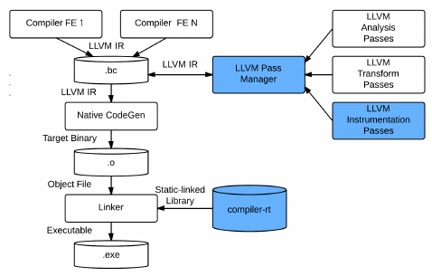
本文要讨论的插桩技术包含Sanitizer-Coverage和ASAN,它们在LLVM中分别存在于Pass和Compiler-RT中.简单地说,Pass提供插桩的功能,Compiler-RT中提供了运行时支持的内部接口函数,下面从最容易入手的Sanitizer-Coverage开始实现代码覆盖率的统计.
玩转Sanitizer-Coverage
Sanitizer-Coverage初体验
接触过二进制Fuzzing的朋友们应该知道,代码覆盖率的用意是了解当前的模糊测试方式与用例触发程序执行的代码占整体代码的百分比,这个比值越高,越说明有很多的代码分支和函数被执行到,能够挖掘到隐藏在代码的漏洞的概率就更大.
下面是一段简单的测试代码:
#include <stdlib.h>
int function1(int a) {
if (1 == a)
return 0;
return 1;
}
int function2() {
return -1;
}
int main() {
if (rand() % 2)
function1(rand() % 3);
else
function2();
return 0;
}
要想Clang引入Sanitizer-Coverage,需要提供编译参数-fsanitize-coverage=trace-pc-guard,编译命令如下:
all:
clang -fsanitize-coverage=trace-pc-guard ./test_case.c -g -o ./test_case
把编译后的可执行程序./test_case拿到IDA逆向,可以发现LLVM Sanitizer-Coverage的插桩原理:
int __cdecl main(int argc, const char **argv, const char **envp)
{
int v3; // eax
__int64 v4; // rdx
int v5; // eax
_sanitizer_cov_trace_pc_guard(&unk_439BC0, argv, envp);
v3 = rand();
v4 = (unsigned int)(v3 >> 31);
LODWORD(v4) = v3 % 2;
if ( v3 % 2 )
{
_sanitizer_cov_trace_pc_guard((char *)&unk_439BC0 + 4, argv, v4);
v5 = rand();
function1(v5 % 3);
}
else
{
_sanitizer_cov_trace_pc_guard((char *)&unk_439BC0 + 8, argv, v4);
function2();
}
return 0;
}
其中**_sanitizer_cov_trace_pc_guard()**就是插桩回调函数,如果没有重写该函数,那就LLVM就会使用默认版本,官方文档有一处示例代码,使用自定义该回调函数打印插桩分支信息.
// 多余注释已经删除,感兴趣可自行到官网查看
extern "C" void __sanitizer_cov_trace_pc_guard(uint32_t *guard) {
if (!*guard) return;
void *PC = __builtin_return_address(0);
char PcDescr[1024];
__sanitizer_symbolize_pc(PC, "%p %F %L", PcDescr, sizeof(PcDescr));
printf("guard: %p %x PC %s\n", guard, *guard, PcDescr);
}
把函数代码放到test_case.c中并添加相关头文件后,编译后执行效果如下:
ubuntu@ubuntu-virtual-machine:~/Desktop/instrument_note$ ./test_case
guard: 0x439bc0 5 PC 0x423c06 in main /home/ubuntu/Desktop/instrument_note/./test_case.c:17
guard: 0x439bc4 6 PC 0x423c3b in main /home/ubuntu/Desktop/instrument_note/./test_case.c:19:19
guard: 0x439bb0 1 PC 0x423b6c in function1 /home/ubuntu/Desktop/instrument_note/./test_case.c:6
guard: 0x439bb4 2 PC 0x423b98 in function1 /home/ubuntu/Desktop/instrument_note/./test_case.c:8:9
ubuntu@ubuntu-virtual-machine:~/Desktop/instrument_note$
一个简单的代码覆盖率Demo
统计程序的代码覆盖率需要两个要素:当前程序所有分支总数/执行过的程序路径总数.对于当前程序所有分支总数的获取,我们可以直接通过__sanitizer_cov_trace_pc_guard()统计得到,那么当前程序所有分支总数怎么获取呢?我们发现LLVM还提供了Sanitizer-Coverage初始化函数__sanitizer_cov_trace_pc_guard_init(),来看看它的声明.
void __sanitizer_cov_trace_pc_guard_init(uint32_t *start, uint32_t *stop);
其中,start和stop参数分别指的是插桩数据开始到结束的指针,那么只需要计算stop-start即可获取当前程序所有分支总数.
uint32_t __sancov_current_all_guard_count = 0;
void __sanitizer_cov_trace_pc_guard_init(uint32_t *start,uint32_t *stop) {
__sancov_current_all_guard_count = (stop - start);
printf("Sanitizer All Coverage edges: 0x%X \n",__sancov_current_all_guard_count);
}
ubuntu@ubuntu-virtual-machine:~/Desktop/instrument_note$ make && ./test_case
clang -fsanitize-coverage=trace-pc-guard ./test_case.c -g -o ./test_case
./test_case.c:31:3: warning: implicit declaration of function '__sanitizer_symbolize_pc' is invalid in C99 [-Wimplicit-function-declaration]
__sanitizer_symbolize_pc(PC, "%p %F %L", PcDescr, sizeof(PcDescr));
^
1 warning generated.
Sanitizer All Coverage edges: 0x7
ubuntu@ubuntu-virtual-machine:~/Desktop/instrument_note$
稍微对代码进行修改,就可以完成一个简单的代码覆盖率统计Demo
uint32_t __sancov_current_all_guard_count = 0;
uint32_t __sancov_current_execute_guard_count = 0;
void __sanitizer_cov_trace_pc_guard(uint32_t *guard) {
if (!*guard) return;
void *PC = __builtin_return_address(0);
char PcDescr[1024];
__sanitizer_symbolize_pc(PC, "%p %F %L", PcDescr, sizeof(PcDescr));
printf("guard: %p %x PC %s\n", guard, *guard, PcDescr);
++__sancov_current_execute_guard_count;
}
void __sanitizer_cov_trace_pc_guard_init(uint32_t *start,uint32_t *stop) {
int index = 0;
for (uint32_t *p = start;p < stop;++p) // 为什么这里要需要for循环初始化呢,下一章会提到
*p = ++index;
__sancov_current_all_guard_count = (stop - start);
printf("Sanitizer All Coverage edges: 0x%X \n",__sancov_current_all_guard_count);
}
int main() {
if (rand() % 2)
function1(rand() % 3);
else
function2();
printf("Coverage Rate:%.2f% (%d/%d)\n",
__sancov_current_execute_guard_count,
__sancov_current_all_guard_count,
((float)__sancov_current_execute_guard_count/(float)__sancov_current_all_guard_count) * 100);
return 0;
}
ubuntu@ubuntu-virtual-machine:~/Desktop/instrument_note$ make && ./test_case
clang -fsanitize-coverage=trace-pc-guard ./test_case.c -g -o ./test_case
Sanitizer All Coverage edges: 0x7
guard: 0x439bc0 5 PC 0x423ca6 in main /home/ubuntu/Desktop/instrument_note/./test_case.c:41
guard: 0x439bc4 6 PC 0x423cdb in main /home/ubuntu/Desktop/instrument_note/./test_case.c:43:19
guard: 0x439bb0 1 PC 0x423c0c in function1 /home/ubuntu/Desktop/instrument_note/./test_case.c:30
guard: 0x439bb4 2 PC 0x423c38 in function1 /home/ubuntu/Desktop/instrument_note/./test_case.c:32:9
Coverage Rate:57.14% (4/7)
ubuntu@ubuntu-virtual-machine:~/Desktop/instrument_note$
深入探索Sanitizer-Coverage实现
前一章节中留下了一个疑问,如果有自行使用这段代码编译运行就会发现,为什么用户自定义函数__sanitizer_cov_trace_pc_guard_init()之后,__sanitizer_cov_trace_pc_guard()就没有任何程序执行输出了?为什么__sanitizer_cov_trace_pc_guard_init()对start和stop初始化之后就可以成功运行了?为了深入理解这个问题,我们需要逆向Sanitizer-Coverage编译后的二进制程序.
我们阅读默认版本的__sanitizer_cov_trace_pc_guard_init()代码:
// 默认版本()
unsigned __int64 __usercall _sanitizer_cov_trace_pc_guard_init@<rax>(unsigned __int64 result@<rax>, unsigned __int64 a2@<rdi>, __sancov *a3@<rsi>, __m128i a4@<xmm1>, __m128i a5@<xmm8>)
{
// 省略很多代码
v5 = (_DWORD *)a2; // start
if ( *(_DWORD *)a2 )
return result;
v6 = (unsigned __int64)a3; // stop
// 省略很多代码
do
{
*v5 = ++v8;
++v5;
}
while ( (unsigned __int64)v5 < v6 );
// 省略很多代码
return result;
}
初始化函数会对start和stop这块内存区域进行计数写入,再来看看这块内存的分布.
__sancov_guards:0000000000439BB0 ; ===========================================================================
__sancov_guards:0000000000439BB0
__sancov_guards:0000000000439BB0 ; Segment type: Pure data
__sancov_guards:0000000000439BB0 ; Segment permissions: Read/Write
__sancov_guards:0000000000439BB0 __sancov_guards segment dword public 'DATA' use64
__sancov_guards:0000000000439BB0 assume cs:__sancov_guards
__sancov_guards:0000000000439BB0 ;org 439BB0h
__sancov_guards:0000000000439BB0 public __start___sancov_guards
__sancov_guards:0000000000439BB0 ; uint32_t _start___sancov_guards[3]
__sancov_guards:0000000000439BB0 __start___sancov_guards dd 0 ; start参数起始地址
__sancov_guards:0000000000439BB4 db 0
__sancov_guards:0000000000439BB5 db 0
__sancov_guards:0000000000439BB6 db 0
__sancov_guards:0000000000439BB7 db 0
__sancov_guards:0000000000439BB8 db 0
__sancov_guards:0000000000439BB9 db 0
__sancov_guards:0000000000439BBA db 0
__sancov_guards:0000000000439BBB db 0
__sancov_guards:0000000000439BBC ; uint32_t guard
__sancov_guards:0000000000439BBC guard dd 0
__sancov_guards:0000000000439BC0 ; uint32_t dword_439BC0[3]
__sancov_guards:0000000000439BC0 dword_439BC0 dd 0
__sancov_guards:0000000000439BC0
__sancov_guards:0000000000439BC4 db 0
__sancov_guards:0000000000439BC5 db 0
__sancov_guards:0000000000439BC6 db 0
__sancov_guards:0000000000439BC7 db 0
__sancov_guards:0000000000439BC8 db 0
__sancov_guards:0000000000439BC9 db 0
__sancov_guards:0000000000439BCA db 0
__sancov_guards:0000000000439BCB db 0
__sancov_guards:0000000000439BCB __sancov_guards ends
__sancov_guards:0000000000439BCB
LOAD:0000000000439BCC ; stop结束地址
这样来看这块内存数据不太容易理解,我们再读一下funtion1()的反汇编代码.
int __cdecl function1(int a)
{
int v2; // [rsp+Ch] [rbp-4h]
_sanitizer_cov_trace_pc_guard(_start___sancov_guards); // 从start[0]读取数据调用trace_pc_guard()
if ( a == 1 )
{
_sanitizer_cov_trace_pc_guard(&_start___sancov_guards[1]); // 从start[1]读取数据调用trace_pc_guard()
v2 = 0;
}
else
{
_sanitizer_cov_trace_pc_guard(&_start___sancov_guards[2]); // 从start[2]读取数据调用trace_pc_guard()
v2 = 1;
}
return v2;
}
// 执行function1()后的输出如下:
// guard: 0x439bb0 1 PC 0x423c1c in function1 /home/ubuntu/Desktop/instrument_note/./test_case.c:31
// guard: 0x439bb4 2 PC 0x423c48 in function1 /home/ubuntu/Desktop/instrument_note/./test_case.c:33:9
对function1()的逆向和运行可以发现,start[0]-start[2]的内存数据是用于保存当前执行的分支ID数据.综上所述,Sanitizer-Coverage会创造一块专用的区段用于保存插桩分支ID信息,但是这块内存默认是空数据,所以才需要__sanitizer_cov_trace_pc_guard_init遍历生成ID写入这块内存,后续__sanitizer_cov_trace_pc_guard()就可以成功从这里读取到分支ID数据.理解这个细节之后,再回来阅读上面的自定义__sanitizer_cov_trace_pc_guard_init()容易明白意义何在了.
// 用户自定义版本
void __cdecl _sanitizer_cov_trace_pc_guard_init(uint32_t *start, uint32_t *stop)
{
uint32_t *p; // [rsp+0h] [rbp-20h]
int index; // [rsp+Ch] [rbp-14h]
index = 0;
for ( p = start; p <= stop; ++p ) // 初始化分支ID表
*p = ++index;
_sancov_current_all_guard_count = stop - start; // 计算所有程序分支总数
printf("Sanitizer All Coverage edges: 0x%X \n", (unsigned int)(stop - start), p);
}
LLVM Pass for SanitizerCoverage.cpp实现细节
了解Sanitizer-Coverage的运行原理后,现在从Clang编译的角度去探索它是怎么做实现的.SanitizerCoverage的实现代码在LLVM的\llvm-project\llvm\lib\Transforms\Instrumentation\SanitizerCoverage.cpp目录.在阅读插桩代码之前简短提示下LLVM的Pass(优化模块)运行过程,插桩时一般用到ModulePass和FunctionPass,如果对整个代码文件进行处理时,那就用到ModulePass对象;如果对所有函数都处理,那就用到FunctionPass.PassManager控制所有Pass的执行过程.
class ModuleSanitizerCoverageLegacyPass : public ModulePass {
public:
bool runOnModule(Module &M) override {
ModuleSanitizerCoverage ModuleSancov(Options, Allowlist.get(),
Blocklist.get());
// Allowlist/Blocklist由参数-fsanitize-coverage-allowlist/-fsanitize-coverage-blocklist指定函数列表,有些场景下会用到
auto DTCallback = [this](Function &F) -> const DominatorTree * {
return &this->getAnalysis<DominatorTreeWrapperPass>(F).getDomTree();
};
auto PDTCallback = [this](Function &F) -> const PostDominatorTree * {
return &this->getAnalysis<PostDominatorTreeWrapperPass>(F)
.getPostDomTree();
};
return ModuleSancov.instrumentModule(M, DTCallback, PDTCallback);
}
}
ModulePass执行时的入口点在runOnModule()中,这里主要是把相关的参数传递给instrumentModule().
bool ModuleSanitizerCoverage::instrumentModule(
Module &M, DomTreeCallback DTCallback, PostDomTreeCallback PDTCallback) {
if (Options.CoverageType == SanitizerCoverageOptions::SCK_None)
return false;
if (Allowlist &&
!Allowlist->inSection("coverage", "src", M.getSourceFileName()))
return false;
if (Blocklist &&
Blocklist->inSection("coverage", "src", M.getSourceFileName()))
return false;
C = &(M.getContext());
DL = &M.getDataLayout();
CurModule = &M;
CurModuleUniqueId = getUniqueModuleId(CurModule);
TargetTriple = Triple(M.getTargetTriple());
FunctionGuardArray = nullptr;
Function8bitCounterArray = nullptr;
FunctionBoolArray = nullptr;
FunctionPCsArray = nullptr;
IntptrTy = Type::getIntNTy(*C, DL->getPointerSizeInBits());
IntptrPtrTy = PointerType::getUnqual(IntptrTy);
Type *VoidTy = Type::getVoidTy(*C);
IRBuilder<> IRB(*C);
Int64PtrTy = PointerType::getUnqual(IRB.getInt64Ty());
Int32PtrTy = PointerType::getUnqual(IRB.getInt32Ty());
Int8PtrTy = PointerType::getUnqual(IRB.getInt8Ty());
Int1PtrTy = PointerType::getUnqual(IRB.getInt1Ty());
Int64Ty = IRB.getInt64Ty();
Int32Ty = IRB.getInt32Ty();
Int16Ty = IRB.getInt16Ty();
Int8Ty = IRB.getInt8Ty();
Int1Ty = IRB.getInt1Ty();
SanCovTracePCIndir =
M.getOrInsertFunction(SanCovTracePCIndirName, VoidTy, IntptrTy);
// Make sure smaller parameters are zero-extended to i64 as required by the
// x86_64 ABI.
AttributeList SanCovTraceCmpZeroExtAL;
if (TargetTriple.getArch() == Triple::x86_64) {
SanCovTraceCmpZeroExtAL =
SanCovTraceCmpZeroExtAL.addParamAttribute(*C, 0, Attribute::ZExt);
SanCovTraceCmpZeroExtAL =
SanCovTraceCmpZeroExtAL.addParamAttribute(*C, 1, Attribute::ZExt);
}
SanCovTraceCmpFunction[0] =
M.getOrInsertFunction(SanCovTraceCmp1, SanCovTraceCmpZeroExtAL, VoidTy,
IRB.getInt8Ty(), IRB.getInt8Ty());
SanCovTraceCmpFunction[1] =
M.getOrInsertFunction(SanCovTraceCmp2, SanCovTraceCmpZeroExtAL, VoidTy,
IRB.getInt16Ty(), IRB.getInt16Ty());
SanCovTraceCmpFunction[2] =
M.getOrInsertFunction(SanCovTraceCmp4, SanCovTraceCmpZeroExtAL, VoidTy,
IRB.getInt32Ty(), IRB.getInt32Ty());
SanCovTraceCmpFunction[3] =
M.getOrInsertFunction(SanCovTraceCmp8, VoidTy, Int64Ty, Int64Ty);
SanCovTraceConstCmpFunction[0] = M.getOrInsertFunction(
SanCovTraceConstCmp1, SanCovTraceCmpZeroExtAL, VoidTy, Int8Ty, Int8Ty);
SanCovTraceConstCmpFunction[1] = M.getOrInsertFunction(
SanCovTraceConstCmp2, SanCovTraceCmpZeroExtAL, VoidTy, Int16Ty, Int16Ty);
SanCovTraceConstCmpFunction[2] = M.getOrInsertFunction(
SanCovTraceConstCmp4, SanCovTraceCmpZeroExtAL, VoidTy, Int32Ty, Int32Ty);
SanCovTraceConstCmpFunction[3] =
M.getOrInsertFunction(SanCovTraceConstCmp8, VoidTy, Int64Ty, Int64Ty);
{
AttributeList AL;
if (TargetTriple.getArch() == Triple::x86_64)
AL = AL.addParamAttribute(*C, 0, Attribute::ZExt);
SanCovTraceDivFunction[0] =
M.getOrInsertFunction(SanCovTraceDiv4, AL, VoidTy, IRB.getInt32Ty());
}
SanCovTraceDivFunction[1] =
M.getOrInsertFunction(SanCovTraceDiv8, VoidTy, Int64Ty);
SanCovTraceGepFunction =
M.getOrInsertFunction(SanCovTraceGep, VoidTy, IntptrTy);
SanCovTraceSwitchFunction =
M.getOrInsertFunction(SanCovTraceSwitchName, VoidTy, Int64Ty, Int64PtrTy);
Constant *SanCovLowestStackConstant =
M.getOrInsertGlobal(SanCovLowestStackName, IntptrTy);
SanCovLowestStack = dyn_cast<GlobalVariable>(SanCovLowestStackConstant);
if (!SanCovLowestStack) {
C->emitError(StringRef("'") + SanCovLowestStackName +
"' should not be declared by the user");
return true;
}
SanCovLowestStack->setThreadLocalMode(
GlobalValue::ThreadLocalMode::InitialExecTLSModel);
if (Options.StackDepth && !SanCovLowestStack->isDeclaration())
SanCovLowestStack->setInitializer(Constant::getAllOnesValue(IntptrTy));
SanCovTracePC = M.getOrInsertFunction(SanCovTracePCName, VoidTy);
SanCovTracePCGuard =
M.getOrInsertFunction(SanCovTracePCGuardName, VoidTy, Int32PtrTy);
/*
static const char *const SanCovTracePCName = "__sanitizer_cov_trace_pc";
static const char *const SanCovTraceCmp1 = "__sanitizer_cov_trace_cmp1";
static const char *const SanCovTraceCmp2 = "__sanitizer_cov_trace_cmp2";
static const char *const SanCovTraceCmp4 = "__sanitizer_cov_trace_cmp4";
static const char *const SanCovTraceCmp8 = "__sanitizer_cov_trace_cmp8";
*/
上面的逻辑代码逻辑主要就是从LLVMContext中获取常见变量类型和根据函数名获取SanitizerCoverage的内部函数以初始化,然后就遍历Module中的所有Function,开始插桩.
for (auto &F : M)
instrumentFunction(F, DTCallback, PDTCallback);
void ModuleSanitizerCoverage::instrumentFunction(
Function &F, DomTreeCallback DTCallback, PostDomTreeCallback PDTCallback) {
if (F.empty())
return;
if (F.getName().find(".module_ctor") != std::string::npos)
return; // Should not instrument sanitizer init functions.
if (F.getName().startswith("__sanitizer_"))
return; // Don't instrument __sanitizer_* callbacks.
// 省略很多不插桩的逻辑
SmallVector<Instruction *, 8> IndirCalls;
SmallVector<BasicBlock *, 16> BlocksToInstrument;
SmallVector<Instruction *, 8> CmpTraceTargets;
SmallVector<Instruction *, 8> SwitchTraceTargets;
SmallVector<BinaryOperator *, 8> DivTraceTargets;
SmallVector<GetElementPtrInst *, 8> GepTraceTargets;
// 这些变量分别用于不同参数的插桩方法
// -fsanitize-coverage=trace-pc-guard,indirect-calls,trace-cmp,trace-div,trace-gep
for (auto &BB : F) { // 遍历当前函数所有BasicBlock代码块
if (shouldInstrumentBlock(F, &BB, DT, PDT, Options))
BlocksToInstrument.push_back(&BB); // 记录所有可以进行插桩的BasicBlock
for (auto &Inst : BB) { // 遍历BasicBlock中所有指令
if (Options.IndirectCalls) { // 如果启用参数-fsanitize-coverage=indirect-calls
CallBase *CB = dyn_cast<CallBase>(&Inst);
if (CB && !CB->getCalledFunction()) // 如果是Call指令,dyn_case会返回非NULL指针
IndirCalls.push_back(&Inst); // 记录所有Call指令
}
if (Options.TraceCmp) {
if (ICmpInst *CMP = dyn_cast<ICmpInst>(&Inst))
if (IsInterestingCmp(CMP, DT, Options))
CmpTraceTargets.push_back(&Inst);
if (isa<SwitchInst>(&Inst))
SwitchTraceTargets.push_back(&Inst);
}
if (Options.TraceDiv)
if (BinaryOperator *BO = dyn_cast<BinaryOperator>(&Inst))
if (BO->getOpcode() == Instruction::SDiv ||
BO->getOpcode() == Instruction::UDiv)
DivTraceTargets.push_back(BO);
if (Options.TraceGep)
if (GetElementPtrInst *GEP = dyn_cast<GetElementPtrInst>(&Inst))
GepTraceTargets.push_back(GEP);
if (Options.StackDepth)
if (isa<InvokeInst>(Inst) ||
(isa<CallInst>(Inst) && !isa<IntrinsicInst>(Inst)))
IsLeafFunc = false;
}
}
// 经过多次遍历之后获取到很多BasicBlock和Inst,然后分别使用不同方法进行插桩
InjectCoverage(F, BlocksToInstrument, IsLeafFunc);
InjectCoverageForIndirectCalls(F, IndirCalls);
InjectTraceForCmp(F, CmpTraceTargets);
InjectTraceForSwitch(F, SwitchTraceTargets);
InjectTraceForDiv(F, DivTraceTargets);
InjectTraceForGep(F, GepTraceTargets);
}
由于文章篇幅关系,在此就只介绍InjectCoverage()的插桩逻辑,简单地说,接下来InjectCoverage()会直接根据前面的筛选出来的BlocksToInstrument的入口处插入对__sanitizer_cov_trace_pc_guard()函数调用.
bool ModuleSanitizerCoverage::InjectCoverage(Function &F, ArrayRef<BasicBlock *> AllBlocks,bool IsLeafFunc) {
if (AllBlocks.empty()) return false;
CreateFunctionLocalArrays(F, AllBlocks); // 这里就是创建SantizerCoverage的分支ID记录内存区域
for (size_t i = 0, N = AllBlocks.size(); i < N; i++)
InjectCoverageAtBlock(F, *AllBlocks[i], i, IsLeafFunc); // 遍历所有BasicBlock
return true;
}
void ModuleSanitizerCoverage::CreateFunctionLocalArrays(
Function &F, ArrayRef<BasicBlock *> AllBlocks) {
if (Options.TracePCGuard)
FunctionGuardArray = CreateFunctionLocalArrayInSection(
AllBlocks.size(), F, Int32Ty, SanCovGuardsSectionName); // 记住这个变量,这里的意思是根据当前获取到的所有BasicBlock的数量去创建一个整数数组,用于收集TracePCGuard插桩方法的分支ID记录内存区域
// 省略其它代码
}
void ModuleSanitizerCoverage::InjectCoverageAtBlock(Function &F, BasicBlock &BB,size_t Idx,bool IsLeafFunc) {
BasicBlock::iterator IP = BB.getFirstInsertionPt();
bool IsEntryBB = &BB == &F.getEntryBlock();
DebugLoc EntryLoc;
if (IsEntryBB) {
if (auto SP = F.getSubprogram())
EntryLoc = DebugLoc::get(SP->getScopeLine(), 0, SP);
// Keep static allocas and llvm.localescape calls in the entry block. Even
// if we aren't splitting the block, it's nice for allocas to be before
// calls.
IP = PrepareToSplitEntryBlock(BB, IP);
} else {
EntryLoc = IP->getDebugLoc();
}
IRBuilder<> IRB(&*IP); // 前面一通操作是为了获取BasicBlock的第一条指令
// 省略其它代码
if (Options.TracePCGuard) {
auto GuardPtr = IRB.CreateIntToPtr(
IRB.CreateAdd(IRB.CreatePointerCast(FunctionGuardArray, IntptrTy),
ConstantInt::get(IntptrTy, Idx * 4)),
Int32PtrTy); // 创建整数指针引用,等价于FunctionGuardArray[Idx]
IRB.CreateCall(SanCovTracePCGuard, GuardPtr)->setCannotMerge(); // 使用前面创建的引用来创建函数调用,等价于__sanitizer_cov_trace_pc_guard(FunctionGuardArray[Idx]);
}
// 省略其它代码
}
完成所有插桩之后,最后一步就是程序启动时插入对__sanitizer_cov_trace_pc_guard_init()函数的调用.
Function *Ctor = nullptr;
if (FunctionGuardArray)
Ctor = CreateInitCallsForSections(M, SanCovModuleCtorTracePcGuardName,
SanCovTracePCGuardInitName, Int32PtrTy,
SanCovGuardsSectionName);
细心的读者可能会想起还有个细节没有提到,那就是LLVM默认的__sanitizer_cov_trace_pc_guard_init()函数再哪个地方声明引入的呢?其实这些LLVM内置的函数都在Compiler-RT中实现(后面ASAN会用到),代码目录在\llvm-project\compiler-rt\lib\sanitizer_common.
// sanitizer_coverage_fuchsia.cpp
SANITIZER_INTERFACE_WEAK_DEF(void, __sanitizer_cov_trace_pc_guard_init,
u32 *start, u32 *end) { // LLVM默认__sanitizer_cov_trace_pc_guard_init()函数实现代码
if (start == end || *start)
return;
__sancov::pc_guard_controller.InitTracePcGuard(start, end);
}
void InitTracePcGuard(u32 *start, u32 *end) { // 初始化分支ID内存区域
if (end > start && *start == 0 && common_flags()->coverage) {
// Complete the setup before filling in any guards with indices.
// This avoids the possibility of code called from Setup reentering
// TracePcGuard.
u32 idx = Setup(end - start);
for (u32 *p = start; p < end; ++p) {
*p = idx++;
}
}
}
定制SanitizerCoverage
笔者在实现Fuzzer的时候,遇到了个真实的场景.在使用二次开发或者针对某个模块做单元测试时,往往这个模块的代码只占程序全部代码的很小的部分.举个例子,如果模块代码只占全部代码的5%,但是Fuzzer的测试用例可以覆盖这个模块的80%代码,那么最后统计代码覆盖率是使用5%还是80%呢?笔者认为应该是80%的代码覆盖率才是最接近真实的,所以我的思路是:根据执行过的每个函数的总分支数除以每个函数执行过的分支数即可,示例图如下:
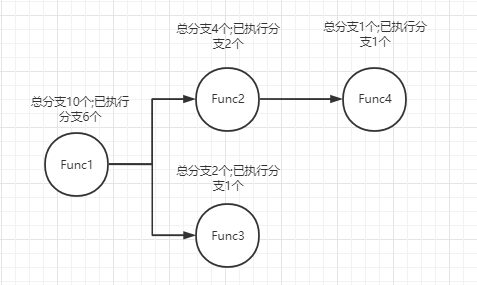
最终的结果是
(6 + 2 + 1 + 1) / (10 + 4 + 1 + 2) = 58.82%
现在遇到的难题有两个:
-
每个函数的分支总数怎么获取呢?
-
插桩只能获取到插桩处的PC地址,怎么样知道我们当前执行到了哪个函数地址?
为了实现这个功能,需要对原有的插桩代码做一些简短的修改,改动如下:
bool ModuleSanitizerCoverage::instrumentModule() {
// ...
SanCovTracePCGuard =
M.getOrInsertFunction(SanCovTracePCGuardName, VoidTy, Int32PtrTy, Int32PtrTy, Int32PtrTy); // 修改__sanitizer_cov_trace_pc_guard()的调用声明,改成__sanitizer_cov_trace_pc_guard(int,int,int)
// ...
}
bool ModuleSanitizerCoverage::InjectCoverage(Function &F,ArrayRef<BasicBlock *> AllBlocks,bool IsLeafFunc) {
if (AllBlocks.empty()) return false;
CreateFunctionLocalArrays(F, AllBlocks);
for (size_t i = 0, N = AllBlocks.size(); i < N; i++)
InjectCoverageAtBlock(F, *AllBlocks[i], i, IsLeafFunc, N); // 遍历出来的BasicBlock总数其实就是当前函数的所有分支
return true;
}
void ModuleSanitizerCoverage::InjectCoverageAtBlock(Function &F, BasicBlock &BB,size_t Idx,bool IsLeafFunc,size_t EdgeCount) { // 新增参数EdgeCount
// ...
if (Options.TracePCGuard) {
std::vector<Value*> SanCovTracePCGuardArgumentList; // 创建参数调用列表
auto GuardPtr = IRB.CreateIntToPtr(
IRB.CreateAdd(IRB.CreatePointerCast(FunctionGuardArray, IntptrTy),
ConstantInt::get(IntptrTy, Idx * 4)),
Int32PtrTy); // 从FunctionGuardArray中获取到的分支ID数据
auto FunctionPtr = IRB.CreateIntToPtr(IRB.CreatePointerCast(static_cast<Value*>(&F), IntptrTy),Int32PtrTy); // 获取当前函数地址,转换为指针传递
Constant* ConstFunctionInsideEdgeCount = ConstantInt::get(IntptrTy, EdgeCount); // 获取当前函数分支总数,作为int值传递
SanCovTracePCGuardArgumentList.push_back(GuardPtr);
SanCovTracePCGuardArgumentList.push_back(ConstFunctionInsideEdgeCount);
SanCovTracePCGuardArgumentList.push_back(FunctionPtr);
IRB.CreateCall(SanCovTracePCGuard, static_cast<ArrayRef<Value *>>(SanCovTracePCGuardArgumentList))->setCannotMerge();
}
// ...
}
libFuzzer原理
用过libFuzzer和AFL的读者们应该知道,这两款Fuzzer工具核心原理是:它们都会使用数据样本来生成测试数据集,然后使用新生成的测试数据调用程序执行并根据程序插桩的逻辑捕获到执行的分支信息,以此判断新的测试数据有没有发现新的执行路径,如果有发现新执行路径则记录测试数据,后续继续使用基于测试数据变异,不断以此循环.
关于libFuzzer最经典的教程在这里(https://github.com/Dor1s/libfuzzer-workshop),本文着重介绍libFuzzer工具本身的原理,不再复述libFuzzer的用法.
关于libFuzzer的实现代码,在LLVM的\llvm-project\compiler-rt\lib\fuzzer\目录下.
libFuzzer执行Fuzzer过程
本章使用libFuzzer-workshop教程的OpenSSL心脏滴血漏洞来做讲解,相关代码在这里(https://github.com/Dor1s/libfuzzer-workshop/blob/master/lessons/05/openssl_fuzzer.cc),其中核心Fuzzing代码如下:
extern "C" int LLVMFuzzerTestOneInput(const uint8_t *data, size_t size) {
static SSL_CTX *sctx = Init();
SSL *server = SSL_new(sctx);
BIO *sinbio = BIO_new(BIO_s_mem());
BIO *soutbio = BIO_new(BIO_s_mem());
SSL_set_bio(server, sinbio, soutbio);
SSL_set_accept_state(server);
BIO_write(sinbio, data, size);
SSL_do_handshake(server);
SSL_free(server);
return 0;
}
libFuzzer以LLVMFuzzerTestOneInput()作为用户自定义的模糊测试入口点,用户只需要关注为libFuzzer生成的数据编写接口调用逻辑,而libFuzzer本身只需要做好数据生成即可.libFuzzer的数据生成主要由三部分构成:
- 用户指定的初始数据
- 数据变异
- 新路径发现
libFuzzer工作过程也可以简单地归纳为:
- 初始化
- 生成数据
- 开始测试
- 收集代码覆盖率信息
- 生成数据
- 开始测试
- ...以此类推
对以上的执行过程有了印象之后,那么我们就开始对libFuzzer的源码进行探索.FuzzerDriver.cpp文件的FuzzerDriver()函数是libFuzzer的入口点.
int FuzzerDriver(int *argc, char ***argv, UserCallback Callback) {
// 省略代码
if (EF->LLVMFuzzerInitialize) // 如果用户有自定义LLVMFuzzerInitialize()实现,那么就执行该函数,提供这个函数的作为用户自定义实现接口是因为要对库/程序进行初始化
EF->LLVMFuzzerInitialize(argc, argv);
// 省略程序解析外部参数代码
unsigned Seed = Flags.seed; // 如果外部有传递随机数种子的话.参数为-seed=?
if (Seed == 0)
Seed = std::chrono::system_clock::now().time_since_epoch().count() + GetPid(); // 外部没有指定随机数种子,那就使用时间戳+pid
if (Flags.verbosity) // 调试输出,参数为-verbosity
Printf("INFO: Seed: %u\n", Seed);
Random Rand(Seed); // 随机数生成器
auto *MD = new MutationDispatcher(Rand, Options); // 数据变异生成器
auto *Corpus = new InputCorpus(Options.OutputCorpus); // 数据收集器
auto *F = new Fuzzer(Callback, *Corpus, *MD, Options); // Fuzzer核心逻辑模块
StartRssThread(F, Flags.rss_limit_mb); // 创建内存检测线程,如果当前进程的内存占用超过阈值之后就退出Fuzzer报告异常
Options.HandleAbrt = Flags.handle_abrt;
Options.HandleBus = Flags.handle_bus;
Options.HandleFpe = Flags.handle_fpe;
Options.HandleIll = Flags.handle_ill;
Options.HandleInt = Flags.handle_int;
Options.HandleSegv = Flags.handle_segv;
Options.HandleTerm = Flags.handle_term;
Options.HandleXfsz = Flags.handle_xfsz;
SetSignalHandler(Options); // 初始化信号捕获回调函数
// 省略代码
F->Loop(); // 开始Fuzzing
exit(0);
}
通过分析libFuzzer的启动过程我们可知,它整个框架的核心由:
-
数据变异生成器
-
数据收集器
-
Fuzzer核心逻辑模块
组成.接下来我们应该梳理清楚这三个模块之间的关系,接着前面的分析,我们继续阅读
Fuzzer::Loop()的代码.
void Fuzzer::Loop() {
// 省略代码
while (true) {
// 省略代码
if (TimedOut()) break; // 由参数-max_total_time指定的运行时间控制,超时执行就退出
// Perform several mutations and runs.
MutateAndTestOne(); // 执行一次Fuzzing
}
// 省略代码
}
void Fuzzer::MutateAndTestOne() {
auto &II = Corpus.ChooseUnitToMutate(MD.GetRand()); // 从数据收集器中随机挑一个测试数据出来,要结合下面的核心逻辑代码才能理解它的用意
const auto &U = II.U;
size_t Size = U.size();
memcpy(CurrentUnitData, U.data(), Size); // 获取测试数据
// 省略代码
for (int i = 0; i < Options.MutateDepth; i++) { // 对数据变异多次.由参数-mutate_depth控制,默认值是5
size_t NewSize = 0;
NewSize = MD.Mutate(CurrentUnitData, Size, CurrentMaxMutationLen); // 使用前面随机抽取获取到的测试数据作为变异输入生成测试数据
Size = NewSize;
if (i == 0) // 注意,第一次Fuzzing时,会启用数据追踪功能,简而言之就是hook strstr(),strcasestr(),memmem()函数,然后从参数中获取到一些有意思的字符串
StartTraceRecording();
II.NumExecutedMutations++;
if (size_t NumFeatures = RunOne(CurrentUnitData, Size)) { // 开始Fuzzing,如果使用前面生成的变异数据拿去Fuzzing,发现了新的路径数量,就会保存到NumFeatures,没有发现新路径则NumFeatures=0.
Corpus.AddToCorpus({CurrentUnitData, CurrentUnitData + Size}, NumFeatures,
/*MayDeleteFile=*/true); // 注意,这一段代码是libFuzzer的核心逻辑之一,如果变异数据发现新路径,那就记录该数据到数据收集器.这是libFuzzer路径探测的核心原理.
ReportNewCoverage(&II, {CurrentUnitData, CurrentUnitData + Size});
CheckExitOnSrcPosOrItem();
}
StopTraceRecording();
TryDetectingAMemoryLeak(CurrentUnitData, Size,
/*DuringInitialCorpusExecution*/ false);
}
}
size_t Fuzzer::RunOne(const uint8_t *Data, size_t Size) {
ExecuteCallback(Data, Size); // 往下就是调用到LLVMFuzzerTestOneInput()
TPC.UpdateCodeIntensityRecord(TPC.GetCodeIntensity()); // 获取当前执行过的代码分支总数
size_t NumUpdatesBefore = Corpus.NumFeatureUpdates();
TPC.CollectFeatures([&](size_t Feature) {
Corpus.AddFeature(Feature, Size, Options.Shrink);
});
size_t NumUpdatesAfter = Corpus.NumFeatureUpdates(); // 从SanitizerCoverage插桩记录的信息中获取分支数据
// 省略代码
return NumUpdatesAfter - NumUpdatesBefore; // 计算发现了多少新分支路径
}
明白libFuzzer的主要Fuzzing原理后,我们现在探讨下代码覆盖率的实现细节.首先,libFuzzer TracePC(TPC)类是专门用于收集使用SanitizerCoverage插桩获取到的信息,代码实现在FuzzerTracePC.cpp文件下.
ATTRIBUTE_INTERFACE
void __sanitizer_cov_trace_pc_guard_init(uint32_t *Start, uint32_t *Stop) {
fuzzer::TPC.HandleInit(Start, Stop);
}
ATTRIBUTE_INTERFACE
ATTRIBUTE_NO_SANITIZE_ALL
void __sanitizer_cov_trace_pc_guard(uint32_t *Guard) {
uintptr_t PC = reinterpret_cast<uintptr_t>(__builtin_return_address(0));
uint32_t Idx = *Guard;
getStackDepth();
fuzzer::codeIntensity++;
__sancov_trace_pc_pcs[Idx] = PC;
__sancov_trace_pc_guard_8bit_counters[Idx]++;
}
理解这个细节后,再回来看核心逻辑Fuzzer::ExecuteCallback().
void Fuzzer::ExecuteCallback(const uint8_t *Data, size_t Size) {
// 省略代码
uint8_t *DataCopy = new uint8_t[Size];
memcpy(DataCopy, Data, Size); // 从变异的数据中复制一份到这个内存,后面会用到
// 省略代码
TPC.ResetMaps(); // 清空所有路径信息
RunningCB = true;
int Res = CB(DataCopy, Size); // 执行用户自定义的LLVMFuzzerTestOneInput()
RunningCB = false;
// 省略代码
if (!LooseMemeq(DataCopy, Data, Size)) // 注意这个坑,如果传递给LLVMFuzzerTestOneInput()的data会被程序修改,那么libFuzzer会强制退出
CrashOnOverwrittenData();
delete[] DataCopy;
}
数据生成原理
对整个Fuzzing过程清晰后,我们回来探索libFuzzer的数据生成原理,对应数据变异模块MutationDispatcher.
MutationDispatcher::MutationDispatcher(Random &Rand,const FuzzingOptions &Options)
: Rand(Rand), Options(Options) { // Rand是随机数生成器
DefaultMutators.insert(
DefaultMutators.begin(), // 添加数据变异算法
{
{&MutationDispatcher::Mutate_EraseBytes, "EraseBytes"},
{&MutationDispatcher::Mutate_InsertByte, "InsertByte"},
{&MutationDispatcher::Mutate_InsertRepeatedBytes,
"InsertRepeatedBytes"},
{&MutationDispatcher::Mutate_ChangeByte, "ChangeByte"},
{&MutationDispatcher::Mutate_ChangeBit, "ChangeBit"},
{&MutationDispatcher::Mutate_ShuffleBytes, "ShuffleBytes"},
{&MutationDispatcher::Mutate_ChangeASCIIInteger, "ChangeASCIIInt"},
{&MutationDispatcher::Mutate_ChangeBinaryInteger, "ChangeBinInt"},
{&MutationDispatcher::Mutate_CopyPart, "CopyPart"},
{&MutationDispatcher::Mutate_CrossOver, "CrossOver"},
{&MutationDispatcher::Mutate_AddWordFromManualDictionary,
"ManualDict"},
{&MutationDispatcher::Mutate_AddWordFromTemporaryAutoDictionary,
"TempAutoDict"},
{&MutationDispatcher::Mutate_AddWordFromPersistentAutoDictionary,
"PersAutoDict"},
});
if(Options.UseCmp)
DefaultMutators.push_back(
{&MutationDispatcher::Mutate_AddWordFromTORC, "CMP"});
if (EF->LLVMFuzzerCustomMutator) // 如果存在用户自定义的数据变异方法,那就使用它
Mutators.push_back({&MutationDispatcher::Mutate_Custom, "Custom"});
else
Mutators = DefaultMutators;
if (EF->LLVMFuzzerCustomCrossOver)
Mutators.push_back(
{&MutationDispatcher::Mutate_CustomCrossOver, "CustomCrossOver"});
}
关于数据变异的算法读者们自行阅读,这些变异方法基本上都差不多.笔者画图整理全部的逻辑,读者们就能对此一目了然.
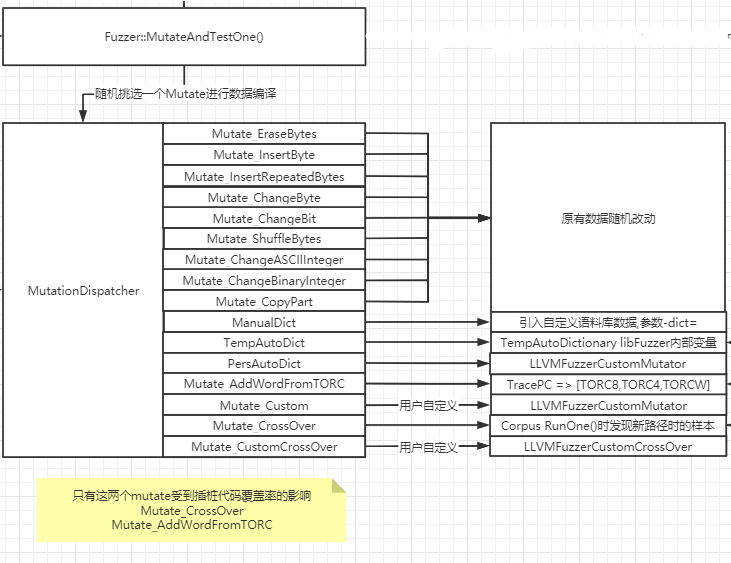
路径探测原理
前面有简略地提到这点,简单总结整体流程如下:
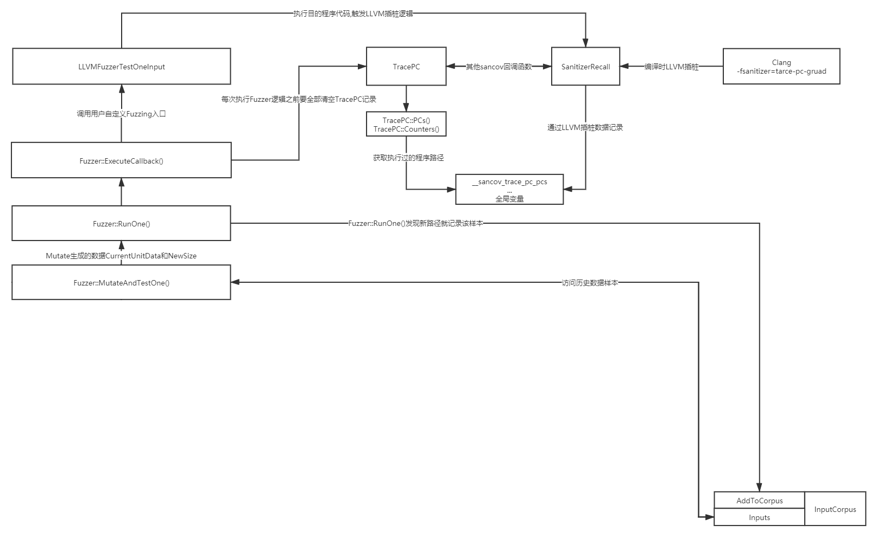
本章最后,把libFuzzer数据变异和路径探测结合在一起的完整过程如下所示.
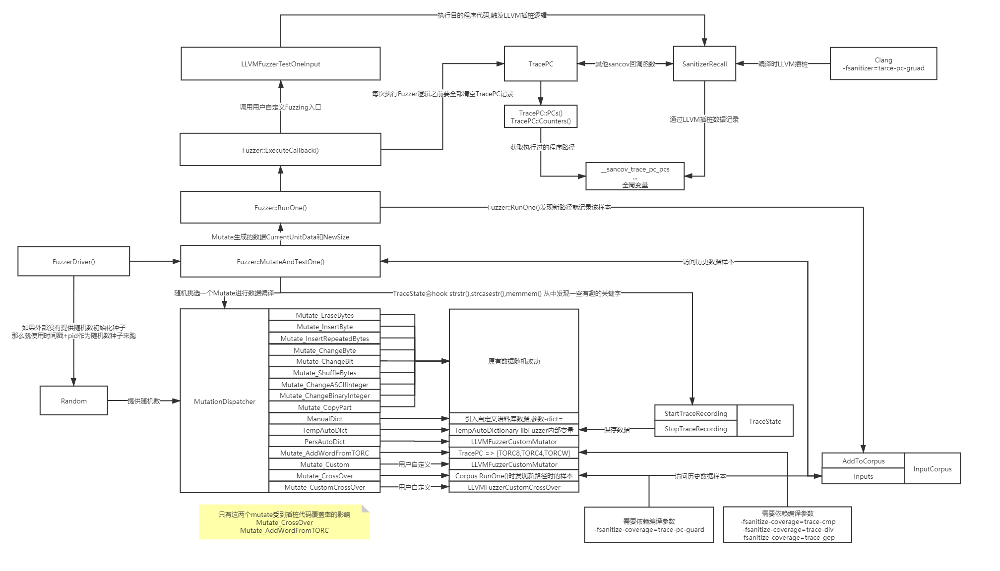
深入解析libFuzzer参数与回显
本小节着重于对实用情景下对libFuzzer的用法和坑(参数,回显,bug等)做深入的分析,为什么要将它放到最后来解释呢?笔者在实际工作中遇到了一些难以处理问题,都是依靠前面对libFuzzer源码的浅薄理解而解决的.
编译时使用 libFuzzer.a和-fsanitize=fuzzer有区别嘛?
回顾libfuzzer-workshop的例子,示例的第一步要求我们先对libFuzzer的源码进行编译,生成libFuzzer.a静态库,然后再自行编写Fuzz逻辑入口,把Fuzzer,库源码,libFuzzer.a同时链接,生成可执行Fuzzer.实际上clang中已经内置了libFuzzer,我们使用-fsanitize=fuzzer也可以引入它.举个例子:
#include <stdio.h>
int LLVMFuzzerTestOneInput(const char* Data,unsigned int Size) {
if (Size > 4) {
if (Data[1] == 'F' && Data[3] == 'A') {
printf("bingo \n");
exit(0);
}
}
return 0;
}
命令行下执行结果:
ubuntu@ubuntu-virtual-machine:~/Desktop/temp$ clang -fsanitize=fuzzer 1.c -o 1_fuzzer && ./1_fuzzer
INFO: Seed: 3655122303
INFO: Loaded 1 modules (5 inline 8-bit counters): 5 [0x4e8080, 0x4e8085),
INFO: Loaded 1 PC tables (5 PCs): 5 [0x4bee00,0x4bee50),
INFO: -max_len is not provided; libFuzzer will not generate inputs larger than 4096 bytes
INFO: A corpus is not provided, starting from an empty corpus
#2 INITED cov: 2 ft: 2 corp: 1/1b exec/s: 0 rss: 28Mb
#219 NEW cov: 3 ft: 3 corp: 2/7b lim: 6 exec/s: 0 rss: 28Mb L: 6/6 MS: 2 CopyPart-CrossOver-
#245 REDUCE cov: 3 ft: 3 corp: 2/6b lim: 6 exec/s: 0 rss: 28Mb L: 5/5 MS: 1 EraseBytes-
#4770 REDUCE cov: 4 ft: 4 corp: 3/12b lim: 48 exec/s: 0 rss: 28Mb L: 6/6 MS: 5 CrossOver-ShuffleBytes-EraseBytes-ChangeBinInt-ShuffleBytes-
#4773 REDUCE cov: 4 ft: 4 corp: 3/11b lim: 48 exec/s: 0 rss: 28Mb L: 5/5 MS: 3 CopyPart-ShuffleBytes-EraseBytes-
bingo
==822227== ERROR: libFuzzer: fuzz target exited
#0 0x4adb40 in __sanitizer_print_stack_trace (/home/ubuntu/Desktop/temp/1_fuzzer+0x4adb40)
#1 0x459498 in fuzzer::PrintStackTrace() (/home/ubuntu/Desktop/temp/1_fuzzer+0x459498)
#2 0x43f58c in fuzzer::Fuzzer::ExitCallback() (/home/ubuntu/Desktop/temp/1_fuzzer+0x43f58c)
#3 0x7f064ebb9a56 in __run_exit_handlers stdlib/exit.c:108:8
#4 0x7f064ebb9bff in exit stdlib/exit.c:139:3
#5 0x4adf32 in LLVMFuzzerTestOneInput (/home/ubuntu/Desktop/temp/1_fuzzer+0x4adf32)
#6 0x440a31 in fuzzer::Fuzzer::ExecuteCallback(unsigned char const*, unsigned long) (/home/ubuntu/Desktop/temp/1_fuzzer+0x440a31)
#7 0x440175 in fuzzer::Fuzzer::RunOne(unsigned char const*, unsigned long, bool, fuzzer::InputInfo*, bool*) (/home/ubuntu/Desktop/temp/1_fuzzer+0x440175)
#8 0x441ba0 in fuzzer::Fuzzer::MutateAndTestOne() (/home/ubuntu/Desktop/temp/1_fuzzer+0x441ba0)
#9 0x442615 in fuzzer::Fuzzer::Loop(std::__Fuzzer::vector<fuzzer::SizedFile, fuzzer::fuzzer_allocator<fuzzer::SizedFile> >&) (/home/ubuntu/Desktop/temp/1_fuzzer+0x442615)
#10 0x432025 in fuzzer::FuzzerDriver(int*, char***, int (*)(unsigned char const*, unsigned long)) (/home/ubuntu/Desktop/temp/1_fuzzer+0x432025)
#11 0x459c72 in main (/home/ubuntu/Desktop/temp/1_fuzzer+0x459c72)
#12 0x7f064eb9dcb1 in __libc_start_main csu/../csu/libc-start.c:314:16
#13 0x40684d in _start (/home/ubuntu/Desktop/temp/1_fuzzer+0x40684d)
SUMMARY: libFuzzer: fuzz target exited
MS: 1 InsertByte-; base unit: 0c7d9271cf3d2a4e2c3eec3e76a2d1dc1431af36
0xa,0x46,0xf6,0x41,0xa,0xa,
\x0aF\xf6A\x0a\x0a
artifact_prefix='./'; Test unit written to ./crash-8860dc7909080bcb9ca9827f67704611bbdf02b9
Base64: Ckb2QQoK
ubuntu@ubuntu-virtual-machine:~/Desktop/temp$
这看起来和直接引入libFuzzer.a的效果一样,那么接下来我们再引入**-fsanitize-coverage=trace-pc-guard**重新编译运行.结果如下:
ubuntu@ubuntu-virtual-machine:~/Desktop/temp$ clang -v
Ubuntu clang version 11.0.0-2
Target: x86_64-pc-linux-gnu
ubuntu@ubuntu-virtual-machine:~/Desktop/temp$ clang -fsanitize=fuzzer -fsanitize-coverage=trace-pc-guard 1.c -o 1_fuzzer && ./1_fuzzer
-fsanitize-coverage=trace-pc-guard is no longer supported by libFuzzer.
Please either migrate to a compiler that supports -fsanitize=fuzzer
or use an older version of libFuzzer
ubuntu@ubuntu-virtual-machine:~/Desktop/temp$
这是因为高版本的clang不支持trace-pc-guard和trace-pc了.对此有两个解决方法:
- 使用-fsanitize-coverage=trace-gep,trace-div,trace-cmp替代trace-pc-guard.(适用于Windows平台)
- 使用低版本的libFuzzer编译出静态库然后导入链接.因为不支持trace-pc-guard的逻辑是在libFuzzer中写死的(参考FuzzerTracePC.cpp __sanitizer_cov_trace_pc_guard()函数),即使换成高版本libFuzzer的静态库也是一样的提示.
为什么libFuzzer要删除对trace-pc的支持?
libFuzzer开发者kcc在2019年1月的Commit中删除了libFuzzer对trace-pc的支持,相关diff如下:
-
https://github.com/llvm/llvm-project/commit/62d727061053dac28447a900fce064c54d366bd6#
-
https://github.com/llvm/llvm-project/commit/62d727061053dac28447a900fce064c54d366bd6#
笔者找遍了文档和提交记录,对于为什么要删除trace-pc的支持找不到任何相关信息,于是只能通过阅读源码和效果对比测试来理解和推测.相关结论如下:
-
删除trace-pc是因为trace-pc的代码覆盖率统计方法可以被替代.
-
trace-pc随后被inline-8bit-counter(统计BasicBlock执行次数)和trace-cmp(在分支之前插桩)替代,因为trace-cmp可以主动发现逻辑判断中对比的数值,部分场景下能够增强主动模糊测试效果.
我们先对比一下改变前后的libFuzzer编译结果.旧版本的libFuzzer使用trace-pc插桩之后的代码逻辑如下,
生成的Data让逻辑执行到某个特定的BasicBlock时才记录代码覆盖,这样模糊测试工具相对被动.
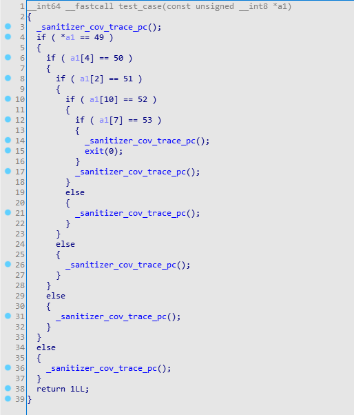
新版本的libFuzzer默认使用trace-cmp插桩之后,会在判断逻辑前面插桩并收集判断逻辑的数据(比如下面的反编译就是收集判断if(Data[0] = '1')的字符1),然后回馈到语料库(fuzzer::TracePC::TableOfRecentCompares).有了这些判断中的数据,生成模糊测试的数据就能相对有个方向,更为主动.其中__santizer_cov_trace_const_cmp4是由trace-cmp插桩的逻辑,++byte_4EB071是由inline-8bit-Counter插桩的逻辑.
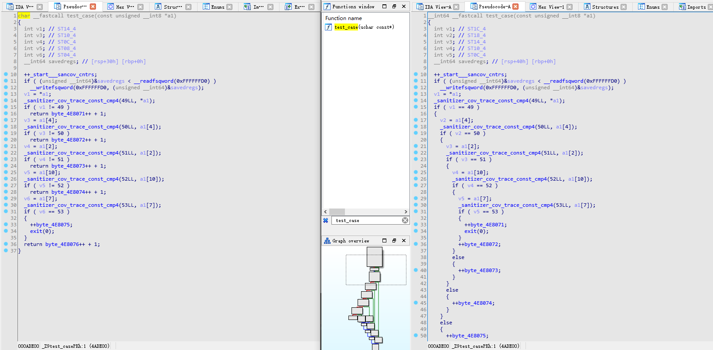
两种插桩模式的模糊测试效果对比如下:
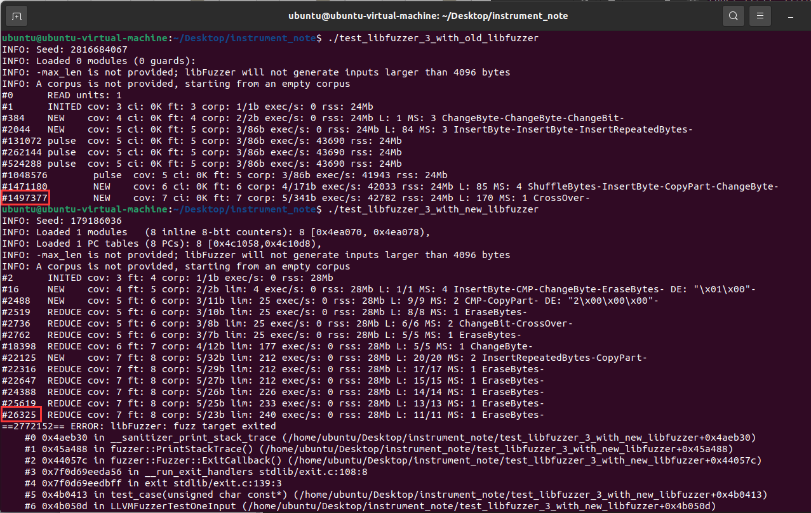
附加参考链接:https://reviews.llvm.org/rC352818
Windows平台下怎么引用libFuzzer?
Windows平台下使用libFuzzer建议还是使用LLVM官网的Windows编译套件,因为使用Visutal Studio Installer下载的LLVM版本只支持32位编译(只有32位的静态库),LLVM官网的Windows编译套件32/64位都支持.
Visual Studio项目需要修改编译工具集为LLVM-clang和正确平台SDK的即可.有几点需要注意:
- clang的编译语法和MSVC不一样,有一些不应该提示的错误可以使用-Wno-xxx关闭警告.
- clang甚至不支持一些MSVC内置函数(比如__cpuid等),可以尝试引入intrin.h解决.
- 有一些MSVC或者WinAPI符号无法被clang识别,这是因为C++重载问题导致clang找不到符号.比如InternalLockAdd(LONG)和InternalLockAdd(ULONG),clang会认为是两个不一样的函数,但是WinAPI只有一个.所以建议直接对函数参数传参做强制转换,.对齐标准WinAPI声明.
- 链接时需要手工引入.lib库,还记得前面的compiler-RT库嘛,插桩逻辑和Fuzzer调度逻辑都在这里,clang默认不会加载.
libFuzzer怎么样提高模糊测试效果?
-dict参数指定一个语料库,后续ManualDict这些数据变异模块就可以从这里拿到和当前被测试的逻辑强相关的关键词.举个例子,我们对SQL注入做测试,这些关键词是不是就包含了:union select,from,count()等;对文件解析测试,是不是就需要包含7zip,PE,MZ,Rar!等关键词呢.我们传递的这些关键词,最终会被拼接到LLVMFuzzerTestOneInput()的data参数中.
实际上,libFuzzer也能够像AFL一样接受一批样本数据作为初始化输入来做模糊测试.这样的话我们就可以根据模糊测试的对象的业务去github和各个项目的测试用例中搜罗样本数据了.
上面两个参数是可以结合使用的,不带参数和带参数的对路径探测的结果影响如下:
ubuntu@ubuntu-virtual-machine:~/Desktop/fuzz$ ./test_case
INFO: Seed: 1117474860
INFO: Loaded 1 modules (10682 guards): [0x110c9b8, 0x11170a0),
INFO: -max_len is not provided; libFuzzer will not generate inputs larger than 4096 bytes
INFO: A corpus is not provided, starting from an empty corpus
#0 READ units: 1
#1 INITED cov: 869 ci: 0K ft: 180 corp: 1/1b exec/s: 0 rss: 135Mb
#2 NEW cov: 869 ci: 0K ft: 208 corp: 2/2b exec/s: 0 rss: 135Mb L: 1 MS: 1 ShuffleBytes-
#3 NEW cov: 885 ci: 0K ft: 229 corp: 3/4b exec/s: 0 rss: 135Mb L: 2 MS: 2 ShuffleBytes-CrossOver-
#5 NEW cov: 886 ci: 0K ft: 239 corp: 4/5b exec/s: 0 rss: 135Mb L: 1 MS: 4 ShuffleBytes-CrossOver-EraseBytes-ChangeBit-
#8 NEW cov: 886 ci: 0K ft: 248 corp: 5/8b exec/s: 0 rss: 135Mb L: 3 MS: 2 ChangeBit-CrossOver-
#9 NEW cov: 887 ci: 0K ft: 249 corp: 6/12b exec/s: 0 rss: 135Mb L: 4 MS: 3 ChangeBit-CrossOver-InsertByte-
#12 NEW cov: 898 ci: 0K ft: 264 corp: 7/89b exec/s: 0 rss: 145Mb L: 77 MS: 1 InsertRepeatedBytes-
#13 NEW cov: 898 ci: 1K ft: 267 corp: 8/210b exec/s: 0 rss: 145Mb L: 121 MS: 2 InsertRepeatedBytes-CopyPart-
#14 NEW cov: 898 ci: 2K ft: 269 corp: 9/401b exec/s: 0 rss: 145Mb L: 191 MS: 3 InsertRepeatedBytes-CopyPart-CopyPart-
#15 NEW cov: 898 ci: 2K ft: 270 corp: 10/593b exec/s: 0 rss: 145Mb L: 192 MS: 4 InsertRepeatedBytes-CopyPart-CopyPart-InsertByte-
#21 NEW cov: 899 ci: 41K ft: 271 corp: 11/4689b exec/s: 0 rss: 145Mb L: 4096 MS: 5 ChangeBit-EraseBytes-EraseBytes-ChangeBit-CrossOver-
#25 NEW cov: 899 ci: 41K ft: 272 corp: 12/5513b exec/s: 0 rss: 145Mb L: 824 MS: 4 ChangeByte-CMP-CrossOver-CrossOver- DE: "\xef\x0f"-
#43 NEW cov: 899 ci: 41K ft: 280 corp: 13/5516b exec/s: 0 rss: 145Mb L: 3 MS: 2 ChangeBinInt-CopyPart-
#90 NEW cov: 899 ci: 41K ft: 281 corp: 14/5746b exec/s: 0 rss: 145Mb L: 230 MS: 4 ChangeByte-PersAutoDict-CopyPart-InsertRepeatedBytes- DE: "\xef\x0f"-
#106 NEW cov: 899 ci: 41K ft: 283 corp: 15/6032b exec/s: 0 rss: 145Mb L: 286 MS: 5 EraseBytes-ChangeBit-ShuffleBytes-ChangeBit-InsertRepeatedBytes-
#117 NEW cov: 899 ci: 41K ft: 284 corp: 16/6071b exec/s: 0 rss: 145Mb L: 39 MS: 1 EraseBytes-
#124 NEW cov: 899 ci: 41K ft: 286 corp: 17/6076b exec/s: 0 rss: 145Mb L: 5 MS: 3 ChangeByte-ShuffleBytes-PersAutoDict- DE: "\xef\x0f"-
#163 NEW cov: 899 ci: 41K ft: 288 corp: 18/6093b exec/s: 0 rss: 145Mb L: 17 MS: 2 CMP-CMP- DE: "\x00\x00\x00\x00\x00\x00\x00\x00"-"\xff\xff\xff\xff\xff\xff\x0b["-
#164 NEW cov: 899 ci: 41K ft: 290 corp: 19/6106b exec/s: 0 rss: 145Mb L: 13 MS: 3 CMP-CMP-EraseBytes- DE: "\x00\x00\x00\x00\x00\x00\x00\x00"-"\xff\xff\xff\xff\xff\xff\x0b["-
#169 NEW cov: 899 ci: 41K ft: 292 corp: 20/6118b exec/s: 0 rss: 145Mb L: 12 MS: 3 ChangeByte-ChangeBinInt-CMP- DE: "objective"-
#182 NEW cov: 899 ci: 41K ft: 294 corp: 21/6129b exec/s: 0 rss: 145Mb L: 11 MS: 1 CMP- DE: "\xff\xff\xff\xff\xff\xff\xff\xff"-
#529 NEW cov: 899 ci: 41K ft: 295 corp: 22/6131b exec/s: 0 rss: 146Mb L: 2 MS: 3 ChangeBit-InsertByte-ChangeBit-
#634 NEW cov: 899 ci: 41K ft: 296 corp: 23/10227b exec/s: 0 rss: 146Mb L: 4096 MS: 3 CopyPart-CrossOver-ChangeBit-
#702 NEW cov: 899 ci: 41K ft: 298 corp: 24/10418b exec/s: 702 rss: 146Mb L: 191 MS: 1 ChangeBinInt-
#1041 NEW cov: 899 ci: 41K ft: 299 corp: 25/10424b exec/s: 1041 rss: 146Mb L: 6 MS: 5 ShuffleBytes-CMP-CrossOver-EraseBytes-EraseBytes- DE: "\x00\x00\x00Z"-
ubuntu@ubuntu-virtual-machine:~/Desktop/fuzz$ ./test_case -dict=./libfuzzer_keywork.txt sample/
Dictionary: 375 entries
INFO: Seed: 1048768538
INFO: Loaded 1 modules (10682 guards): [0x110c9b8, 0x11170a0),
Loading corpus dir: sample/
Loaded 1024/2640 files from sample/
Loaded 2048/2640 files from sample/
INFO: -max_len is not provided; libFuzzer will not generate inputs larger than 1048576 bytes
#0 READ units: 2638
#1024 pulse cov: 1805 ci: 609K ft: 1585 corp: 73/15289b exec/s: 512 rss: 748Mb
#2048 pulse cov: 3774 ci: 5983K ft: 6522 corp: 259/3660Kb exec/s: 341 rss: 785Mb
#2638 INITED cov: 4286 ci: 18481K ft: 9928 corp: 490/79Mb exec/s: 131 rss: 997Mb
#2639 NEW cov: 4286 ci: 18481K ft: 9929 corp: 491/79Mb exec/s: 131 rss: 997Mb L: 94081 MS: 1 CMP- DE: "N4LIEF17read_out_"-
#2665 NEW cov: 4325 ci: 18481K ft: 9988 corp: 492/79Mb exec/s: 133 rss: 997Mb L: 165541 MS: 2 CMP-PersAutoDict- DE: "\x0a\x00"-"N4LIEF17read_out_"-
#2713 NEW cov: 4325 ci: 18481K ft: 9999 corp: 493/79Mb exec/s: 129 rss: 997Mb L: 103145 MS: 5 CMP-InsertRepeatedBytes-EraseBytes-ManualDict-ChangeByte- DE: "\x01\x00\x00\x00\x00\x01\x89\xca"-"PowerPoint"-
#2804 NEW cov: 4326 ci: 18481K ft: 10006 corp: 494/79Mb exec/s: 127 rss: 997Mb L: 94081 MS: 1 ChangeBit-
#2960 NEW cov: 4326 ci: 18481K ft: 10007 corp: 495/79Mb exec/s: 118 rss: 997Mb L: 67143 MS: 2 PersAutoDict-CMP- DE: "\x01\x00\x00\x00\x00\x01\x89\xca"-"\x00\x00\x00\x00\x00\x00\x13}"-
#3011 NEW cov: 4326 ci: 18481K ft: 10008 corp: 496/79Mb exec/s: 120 rss: 997Mb L: 94205 MS: 3 ChangeASCIIInt-InsertRepeatedBytes-ChangeBinInt-
#3014 NEW cov: 4327 ci: 18481K ft: 10009 corp: 497/79Mb exec/s: 120 rss: 997Mb L: 67143 MS: 1 CopyPart-
#3102 NEW cov: 4327 ci: 18481K ft: 10013 corp: 498/79Mb exec/s: 114 rss: 997Mb L: 81784 MS: 4 ManualDict-ShuffleBytes-ChangeBit-CopyPart- DE: "Jet\x00"-
#3106 NEW cov: 4327 ci: 18481K ft: 10027 corp: 499/79Mb exec/s: 115 rss: 997Mb L: 72629 MS: 3 CopyPart-ChangeByte-CMP- DE: "\x0b\x00"-
#3109 NEW cov: 4327 ci: 18481K ft: 10030 corp: 500/79Mb exec/s: 115 rss: 997Mb L: 65197 MS: 1 CMP- DE: "\x1f\x00\x00\x00\x00\x00\x00\x00"-
#3522 NEW cov: 4328 ci: 18481K ft: 10031 corp: 501/80Mb exec/s: 103 rss: 997Mb L: 39524 MS: 4 InsertByte-ChangeBit-EraseBytes-InsertByte-
其中cov值则是执行分支总数,可以看到两次Fuzzer运行之间的巨大差异(第一次执行只覆盖899个分支,第二次执行覆盖4328个分支).这里-worker是指同时使用多个进程来执行Fuzzer(源码实现在FuzzerDriver.cpp WorkerThread()).
多个libFuzzer同时启动时,怎么样区分不同的libFuzzer生成的Crash?
libFuzzer产生崩溃时,会记录当前的崩溃样本到本地,但是这些崩溃样本都是以crash slow-unit oom作为前缀.在一些模糊测试场景中,我们会在当前目录下执行多个libFuzzer程序,那就会导致多个libFuzzer产生的崩溃样本无法辨识,此时引入-artifact_prefix参数为崩溃样本自定义前缀即可.
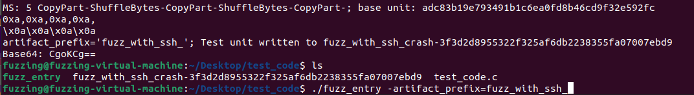
依赖库没有源码时有没有必要使用libFuzzer?
通过前面的分析,我们知道libFuzzer想要实现遗传算法进行模糊测试,那就需要依赖代码覆盖率Sanitize-Coverage进行插桩.但是有时候要进行模糊测试的程序要依赖到动态库和静态库,此时我们就无法对此进行插桩了.笔者在工作中遇到这种情况,处理思路如下:
- 依赖库中的源码和被模糊测试的源码之间有很大的关联性.举个例子,项目中依赖7zip的解压库,然后项目对此进行一层性能优化封装,那么要测试的代码也就必须要包含项目中的封装层代码和7zip依赖库源码,因为缺少了其中任意一部分的代码,就会很难覆盖全整个功能所需要的代码,会导致有些逻辑没法被覆盖到.
- 依赖库中的源码和被模糊测试的源码之间关联系不大.比如项目中引用了protobuf进行数据解析,然后具体的处理逻辑则是由项目处理,那么依赖库protobuf就不应该包含在模糊测试范围中.
如何并行执行多个libFuzzer?
libFuzzer默认只执行一个进程来做模糊测试.我们使用-jobs和-workers参数就能让libFuzzer创建多个进程并行执行.命令如下:
fuzzing@fuzzing-virtual-machine:~/Desktop/test_code$ ./test_code -jobs=10
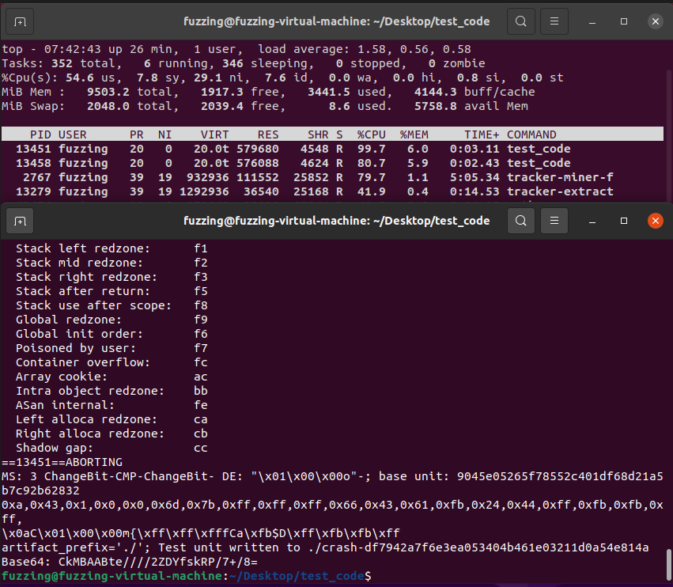
假设读者的电脑配置是4核8G内存的话,那么就会同时有两个进程在执行.如果要同时跑四个进程的话,那就设置为-workers=4,workers的值默认是当前CPU核数/2.
-jobs参数是指完成了n个libFuzzer进程之后就退出程序,默认值为0.如果我们要同时执行8个进程并行执行libFuzzer的命令如下:
fuzzing@fuzzing-virtual-machine:~/Desktop/test_code$ ./test_code -jobs=8 -workers=8
需要特别注意的是,如果读者们要并行执行libFuzzer,jobs和workers参数的传值缺一不可.因为libFuzzer代码中的逻辑就是workers和jobs必须要大于0才可以执行并行多进程,所以这个隐藏的坑就是为什么只设置了-workers=8但是libFuzzer没有执行并行的原因,因为此时jobs值为默认为0.
还有一点值得提示一下,libFuzzer所做的模糊测试,实际上并没有尝试去维护干净的上下文然后重新模糊测试.笔者举个Qemu Fuzzer的例子来说明一下.
我们在对Qemu进行模糊测试时,会生成大量的MMIO和Port IO的方式来进行设备通信.那么大量的测试数据会导致Qemu设备的状态不断发生改变,而不是从一个初始的状态开始执行.比如说解析PE文件的接口,我们实例化类之后把文件内容传递到接口去测试,那么这个类都是从初始的状态去执行数据解析然后改变状态.但是对于Qemu虚拟机这样复杂的系统,它需要维护很多上下文相关的对象,所以每次模糊测试和设备交互时,都会对设备的状态进行改变,导致无法从初始的状态开始测试,影响最终复现漏洞的结果.为了解决这个问题,Qemu 5.2.0中支持的模糊测试方法是在libFuzzer LLVMFuzzerTestOneInput()中为TracePC创建共享内存,然后fork()出子进程执行模糊测试,父进程wait()等待子进程模糊测试结束,然后从共享内存中收集代码覆盖信息,回馈到libFuzzer核心逻辑中去.
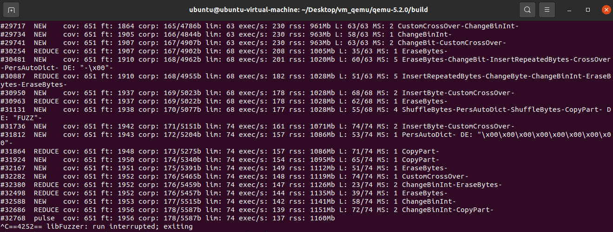
libFuzzer输出哪些信息,怎么样根据这些信息优化Fuzzer?
运行libFuzzer编译的程序,从启动到崩溃输出的信息如下:
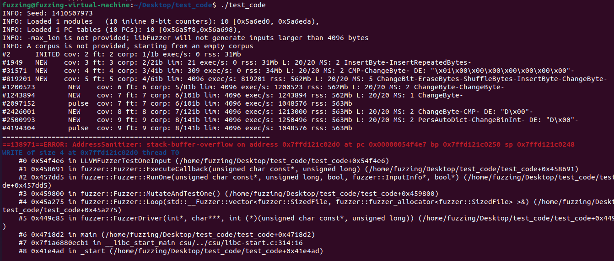
第一行输出INFO: Seed: 1410507973,意思是当前的随机数种子的初始值.因为每一次执行libFuzzer随机数种子的值都是随机的,但是如果读者们想要复现libFuzzer模糊测试,那就需要使用参数-seed指定随机数种子的值.
第二行输出INFO: Loaded 1 modules (10 inline 8-bit counters): 10 [0x5a6ed0, 0x5a6eda),意思是显示当前libFuzzer中使用到的插桩方式(inline 8-bit counters)以及Edge分支信息的内存区域开始和结束信息(Start:0x5a6ed0,End:0x5a6eda,总分支数:10).第三行输出亦是同样意义.
第四行输出INFO: -max_len is not provided; libFuzzer will not generate inputs larger than 4096 bytes,意思是当前没有指定参数-max_len,默认max_len的值是4096字节(4K).max_len参数的意义在于限制libFuzzer生成的Data内容大小.有时候在对协议处理的功能进行模糊测试,那么max_len相对的取值是小一点的,但是对于文件处理的功能进行模糊测试,那么max_len有可能需要设置为100K,具体场景具体分析.
第五行输出INFO: A corpus is not provided, starting from an empty corpus,意思是没有指定输入样本,从空数据生成开始模糊测试.
第六行输出#2 INITED cov: 2 ft: 2 corp: 1/1b exec/s: 0 rss: 31Mb,意思是执行完所有初始样本输入数据,代码覆盖(cov字段)2个块(以BasicBlock或Edge为单位),2条执行路径(ft字段);每秒执行次数0(exec/s字段);内存占用为31 MB(rss字段).libFuzzer会对程序执行内存有限制,默认内存上限是2 GB.在模糊测试的过程中因为大量内存分配超出rss,那就会导致libFuzzer崩溃,记录当前样本到OOM-xxx文件,如果读者们需要控制libFuzzer的内存上限值,那就使用-rss_limit_mb参数(注意,内存泄露也记录在这个范畴中).
第七行输出#1949 NEW cov: 3 ft: 3 corp: 2/21b lim: 21 exec/s: 0 rss: 31Mb L: 20/20 MS: 2 InsertByte-InsertRepeatedBytes-,意思是发现程序执行到新路径,此时代码覆盖3个块,3条执行路径;本次发现新路径时生成模糊测试数据大小为20字节(L字段);数据生成使用了2个数据变异模块串联生成(MS字段);所使用的模块顺序是InsertByte=>InsertRepeatedBytes.
libFuzzer输出模糊测试状态时,每行的第二个字段代表的含义如下:
-
READ ,意思是当前模糊测试阶段是从给定的样本文件夹中读取模糊测试数据来执行.
-
INITED ,意思是使用所有初始样本执行完LLVMFuzzerTestOneInput之后的状态信息.
-
NEW ,意思是发现新路径时的状态信息.
-
REDUCE ,意思是已经执行过的路径发现了更精简的输入.
-
RELOAD ,意思是从样本文件夹中发现并加载了新样本.
-
pulse ,没有什么特别的意义,就是定时告诉用户libFuzzer还在运行.
-
DONE ,libFuzzer执行结束.
!!!!! 如何优化再补充一下~~~~
ASAN原理
读过libFuzzer-workshop或者有libFuzzer使用经验的读者应该对以下的命令很熟悉
clang++ -g openssl_fuzzer.cc -O2 -fno-omit-frame-pointer -fsanitize=address \
-fsanitize-coverage=trace-pc-guard,trace-cmp,trace-gep,trace-div \
-Iopenssl1.0.1f/include openssl1.0.1f/libssl.a openssl1.0.1f/libcrypto.a \
../../libFuzzer/libFuzzer.a -o openssl_fuzzer
我们在引入libFuzzer时,还会引入ASAN(clang命令参数-fsanitize=address).也就是说,我们使用libFuzzer作为Fuzzer驱动,进行接口构造调用/数据生成/路径探测,然后使用ASAN作为内存异常检测工具.下面是使用ASAN的简单例子:
ubuntu@ubuntu-virtual-machine:~/Desktop/instrument_note$ cat ./test_case_2.c
#include <stdio.h>
int main() {
char buffer[10] = {0};
printf("Try Crash!\n");
buffer[10] = 'C';
printf("Oops \n");
return 1;
}
ubuntu@ubuntu-virtual-machine:~/Desktop/instrument_note$ clang ./test_case_2.c -o ./test_case_2 && ./test_case_2
Try Crash!
Oops
ubuntu@ubuntu-virtual-machine:~/Desktop/instrument_note$ clang -fsanitize=address ./test_case_2.c -o ./test_case_2 && ./test_case_2
Try Crash!
=================================================================
==520651==ERROR: AddressSanitizer: stack-buffer-overflow on address 0x7ffeea008e8a at pc 0x0000004c5098 bp 0x7ffeea008e50 sp 0x7ffeea008e48
WRITE of size 1 at 0x7ffeea008e8a thread T0
#0 0x4c5097 in main (/home/ubuntu/Desktop/instrument_note/test_case_2+0x4c5097)
#1 0x7fbfa3d56cb1 in __libc_start_main csu/../csu/libc-start.c:314:16
#2 0x41b2bd in _start (/home/ubuntu/Desktop/instrument_note/test_case_2+0x41b2bd)
Address 0x7ffeea008e8a is located in stack of thread T0 at offset 42 in frame
#0 0x4c4f5f in main (/home/ubuntu/Desktop/instrument_note/test_case_2+0x4c4f5f)
...
本章着重于探索ASAN的实现原理,关于ASAN的更深入用法建议参考官方文档(https://clang.llvm.org/docs/AddressSanitizer.html ;https://github.com/google/sanitizers/wiki/AddressSanitizer ).
ASAN异常检测原理
使用前面的演示例子,当buffer越界时,它必然会修改越界后内存的数据(...虽然这句是废话,但还是要提一下).我们用gdb调试没有引入ASAN编译的示例代码:
(gdb) n
Try Crash!
10 buffer[10] = 'C';
(gdb) info local
buffer = "\000\000\000\000\000\000\000\000\000"
(gdb) x /16x buffer
0x7fffffffdfb2: 0x00 0x00 0x00 0x00 0x00 0x00 0x00 0x00
0x7fffffffdfba: 0x00 0x00 0x00 0x00 0x00 0x00 0xa0 0x11
(gdb) n
12 printf("Oops \n");
(gdb) x /16x buffer
0x7fffffffdfb2: 0x00 0x00 0x00 0x00 0x00 0x00 0x00 0x00
0x7fffffffdfba: 0x00 0x00 0x43 0x00 0x00 0x00 0xa0 0x11
(gdb)
可以看到这里已经越界写数据成功了.一般地,我们要检测越界读写问题时,就需要专门创建一块内存用来做越界对比.下面的示例代码将引入检测逻辑:
#include <memory.h>
#include <stdio.h>
#include <stdlib.h>
#define CHECK_MEMORY_LEFT_SIZE (0x8)
#define CHECK_MEMORY_RIGHT_SIZE (0x8)
#define CHECK_MEMORY_NORMAL_FLAG (0x00)
#define CHECK_MEMORY_EXCEPT_FLAG (0xFF)
void* create_check_memory(int buffer_size) { // 创建内存映射,并且给这块映射内存两则边缘
int real_buffer_size =
CHECK_MEMORY_LEFT_SIZE + CHECK_MEMORY_RIGHT_SIZE + buffer_size;
char* buffer = malloc(real_buffer_size);
memset(buffer,CHECK_MEMORY_EXCEPT_FLAG,real_buffer_size); // 填充异常Flag
memset(&buffer[CHECK_MEMORY_LEFT_SIZE],CHECK_MEMORY_NORMAL_FLAG,buffer_size); // 内存中标识为正常值则说明这块区域是可以任意操作的
return buffer;
}
void free_check_memory(void* buffer,int buffer_size) { // 释放内存
memset(buffer,CHECK_MEMORY_FREE_FLAG,
CHECK_MEMORY_LEFT_SIZE + CHECK_MEMORY_RIGHT_SIZE + buffer_size); // 不要free()释放,而是填充异常Flag,后续如果遇到UAF类漏洞就可以检测到
}
int is_overflow(void* buffer,int offset,int is_write) { // 检测内存异常
unsigned char data = ((unsigned char*)buffer)[CHECK_MEMORY_LEFT_SIZE + offset];
if (CHECK_MEMORY_NORMAL_FLAG != data) {
switch (data) {
case CHECK_MEMORY_EXCEPT_FLAG:
if (is_write)
printf(" ==== Write OverFlow !! ====\n");
else
printf(" ==== Read OverFlow !! ====\n");
break;
case CHECK_MEMORY_FREE_FLAG:
printf(" ==== Use After Free !! ====\n");
break;
default:
printf("Unknow Except\n");
}
exit(0);
}
return 0;
}
int main() {
char buffer[10] = {0};
char* shadow_buffer = create_check_memory(sizeof(buffer)); // 为buffer变量创建检测映射内存
if (is_overflow(shadow_buffer,5,0)) // 向真实内存中写入数据之前先到检测内存中判断是否有异常
exit(0);
int data = buffer[5]; // 正常的读操作
printf("Try Crash!\n");
if (is_overflow(shadow_buffer,10,1))
exit(0);
buffer[10] = 'C'; // 异常的写操作
printf("Oops \n");
free_check_memory(shadow_buffer,sizeof(buffer));
return 1;
}
运行结果如下:
ubuntu@ubuntu-virtual-machine:~/Desktop/instrument_note$ clang -g ./test_case_2.c -o ./test_case_2 && ./test_case_2
Try Crash!
==== Write OverFlow !! ====
ubuntu@ubuntu-virtual-machine:~/Desktop/instrument_note$
这短短几十行代码就是ASAN异常检测的核心原理,它包含了:
-
每个缓冲区中对应的异常检测内存,对应的是ASAN的Shadow Table概念.
-
每个异常检测内存中都会插入正常/异常标识,对应的是ASAN的投毒(Poison)概念.
-
每次进行真实内存操作之前必须获取异常检测内存的内容,判断该地址是否被投毒过,对应的是ASAN的插桩检测概念.
聪明的读者可能会提出这个疑问:因为在异常检测内存的左边和右边八字节范围的内存被污染过,如果读写的偏移足够大,是不是检测逻辑就失效了呢?很遗憾,确实会存在这样的问题.
(gdb) x /8x buffer
0x4052a0: 0xffffffff 0xffffffff 0x00000000 0x00000000
0x4052b0: 0xffff0000 0xffffffff 0x0000ffff 0x00000000
笔者在现实场景中遇到ASAN也存在这样的问题.
#include <stdio.h>
int main(void) {
char buffer[10] = {0};
printf("no crash!\n");
buffer[0x1001] = 0xFF;
printf("crash!\n");
buffer[10] = 0xFF;
return 0;
}
ubuntu@ubuntu-virtual-machine:~/Desktop/instrument_note$ clang -g -fsanitize=address ./test_case_3.c -o ./test_case_3 && ./test_case_3
no crash!
crash!
=================================================================
==521485==ERROR: AddressSanitizer: stack-buffer-overflow on address 0x7fffb261710a at pc 0x0000004c50f9 bp 0x7fffb26170d0 sp 0x7fffb26170c8
WRITE of size 1 at 0x7fffb261710a thread T0
#0 0x4c50f8 in main /home/ubuntu/Desktop/instrument_note/./test_case_3.c:12:16
#1 0x7f54faa5dcb1 in __libc_start_main csu/../csu/libc-start.c:314:16
#2 0x41b2bd in _start (/home/ubuntu/Desktop/instrument_note/test_case_3+0x41b2bd)
Address 0x7fffb261710a is located in stack of thread T0 at offset 42 in frame
#0 0x4c4f5f in main /home/ubuntu/Desktop/instrument_note/./test_case_3.c:5
...
理解核心原理之后,接下来就探索LLVM怎么样实现ASAN.在深入ASAN实现之前,我们必须要知道的一点就是:ASAN分为两部分,插桩(Instrumentation Pass)和运行时逻辑(Compiler-RT).
代码插桩负责:
-
在代码中符合条件的数据操作之前插入异常检测逻辑.
-
引入对全局/栈空间的检测逻辑.
运行时逻辑负责:
-
内存分配/投毒逻辑
-
内存操作hook
-
...
明白这些概念之后,直接逆向简单的ASAN插桩后的程序,代码如下:
int __cdecl main(int argc, const char **argv, const char **envp){
if ( _asan_option_detect_stack_use_after_return )
v24 = (_QWORD *)_asan_stack_malloc_3(0LL, (__asan *)0x180);
stack_point = v24;
if ( !v24 )
stack_point = (_QWORD *)((unsigned __int64)(&v11 - 48) & 0xFFFFFFFFFFFFFFE0LL);
stack_point_ = (unsigned __int64)stack_point;
v25 = stack_point;
*stack_point = 0x41B58AB3LL; // 填充栈开始Magic Code
*(_QWORD *)(stack_point_ + 8) = "1 32 272 4 test";
*(_QWORD *)(stack_point_ + 0x10) = main;
shadow_memory = stack_point_ >> 3;
*(_QWORD *)(shadow_memory + 0x7FFF8000) = 0xF8F8F8F8F1F1F1F1LL; // 对ShadowTable中分配的栈内存进行投毒
*(_QWORD *)(shadow_memory + 0x7FFF8008) = 0xF8F8F8F8F8F8F8F8LL;
*(_QWORD *)(shadow_memory + 0x7FFF8010) = 0xF8F8F8F8F8F8F8F8LL;
*(_QWORD *)(shadow_memory + 0x7FFF8018) = 0xF8F8F8F8F8F8F8F8LL;
*(_QWORD *)(shadow_memory + 0x7FFF8020) = 0xF3F3F8F8F8F8F8F8LL;
*(_QWORD *)(shadow_memory + 0x7FFF8028) = 0xF3F3F3F3F3F3F3F3LL;
v26 = 0;
*(_QWORD *)(shadow_memory + 0x7FFF8004) = 0LL; // 初始化可用栈区域
*(_QWORD *)(shadow_memory + 0x7FFF800C) = 0LL;
*(_QWORD *)(shadow_memory + 0x7FFF8014) = 0LL;
*(_QWORD *)(shadow_memory + 0x7FFF801C) = 0LL;
*(_WORD *)(shadow_memory + 0x7FFF8024) = 0;
v7 = *(_BYTE *)(((unsigned __int64)(real_data_ + 0x22) >> 3) + 0x7FFF8000);
v13 = (unsigned __int64)(real_data_ + 0x22); // 计算偏移,获取到ShadowTable中的内存
v12 = v7;
if ( v7 ) // ASAN内存异常检测插桩判断,内存中是0值表示为正常内存,可以使用,如果为非0值那就认为是被污染过的
_asan_report_store1(v13); // 提示报错
*(_BYTE *)v13 = -1; // 写入真实内存,注意,ShadowTable中的数据全部都是标识这块内存是否被污染过,用了什么方式污染,并不会保存真实的数据到ShadowTable中,所以它才被称为影子页表.
v8 = v21;
*(_QWORD *)((char *)v21 + 4) = 0xF8F8F8F8F8F8F8F8LL; // 释放栈时不是直接free(),而是填充Stack use after标志
*(_QWORD *)((char *)v8 + 12) = 0xF8F8F8F8F8F8F8F8LL;
*(_QWORD *)((char *)v8 + 20) = 0xF8F8F8F8F8F8F8F8LL;
*(_QWORD *)((char *)v8 + 28) = 0xF8F8F8F8F8F8F8F8LL;
*((_WORD *)v8 + 18) = -1800;
return 0;
编译时插桩原理
ASAN的插桩原理比SanitizerCoverage复杂得多,为了容易理解,后续分析实现过程时会省略很多细节.ASAN的插桩过程简单来说就是:
- 筛选合适的指令
- 填充插桩代码
- 进行栈平衡
整体的逻辑示意图如下,先理解过程之后再带着印象去探索源码才能事半功倍:

ASAN的实现代码在\llvm-project\llvm\lib\Transforms\Instrumentation\AddressSanitizer.cpp.遍历每个函数进行插桩的入口点在AddressSanitizer::instrumentFunction()函数.
bool AddressSanitizer::instrumentFunction(Function &F,const TargetLibraryInfo *TLI) {
// 省略代码
SmallVector<InterestingMemoryOperand, 16> OperandsToInstrument;
SmallVector<MemIntrinsic *, 16> IntrinToInstrument;
SmallVector<BasicBlock *, 16> AllBlocks;
int NumAllocas = 0;
// 这些Vector用于保存筛选出来的指令对象和信息
for (auto &BB : F) { // 遍历BasicBlock
AllBlocks.push_back(&BB);
for (auto &Inst : BB) { // 遍历指令
SmallVector<InterestingMemoryOperand, 1> InterestingOperands;
getInterestingMemoryOperands(&Inst, InterestingOperands);
if (!InterestingOperands.empty()) { // 如果当前指令属于需要插桩的位置,那就记录一下,后面会用到
for (auto &Operand : InterestingOperands) {
OperandsToInstrument.push_back(Operand);
}
} else if (MemIntrinsic *MI = dyn_cast<MemIntrinsic>(&Inst)) { // memset/memcpy/memmove操作
IntrinToInstrument.push_back(MI);
}
}
}
// ...
for (auto &Operand : OperandsToInstrument) { // 对数据访问指令进行操作
instrumentMop(ObjSizeVis, Operand, UseCalls,
F.getParent()->getDataLayout());
FunctionModified = true;
}
for (auto Inst : IntrinToInstrument) { // 对内存操作指令进行操作
instrumentMemIntrinsic(Inst);
FunctionModified = true;
}
FunctionStackPoisoner FSP(F, *this);
bool ChangedStack = FSP.runOnFunction(); // 对插桩之后的函数进行栈调整
// ...
return FunctionModified;
}
void AddressSanitizer::getInterestingMemoryOperands(
Instruction *I, SmallVectorImpl<InterestingMemoryOperand> &Interesting) {
if (LoadInst *LI = dyn_cast<LoadInst>(I)) { // LLVM IR Load指令,用于读取数据
if (ignoreAccess(LI->getPointerOperand())) // 判断指令中的操作数是否为指针
return;
Interesting.emplace_back(I, LI->getPointerOperandIndex(), false,
LI->getType(), LI->getAlign());
} else if (StoreInst *SI = dyn_cast<StoreInst>(I)) { // LLVM IR Store指令,用于保存数据
if (ignoreAccess(SI->getPointerOperand()))
return;
Interesting.emplace_back(I, SI->getPointerOperandIndex(), true,
SI->getValueOperand()->getType(), SI->getAlign());
}
}
获得筛选出来的指令后,接下来就进行插桩操作.下面的插桩核心原理,就是在Load/Store指令前面插入异常检测逻辑,如果没有异常才可以执行真实的数据读写操作.
void AddressSanitizer::instrumentMop(ObjectSizeOffsetVisitor &ObjSizeVis,InterestingMemoryOperand &O, bool UseCalls,const DataLayout &DL) {
Value *Addr = O.getPtr(); // 获取指令操作的指针地址
// ...
unsigned Granularity = 1 << Mapping.Scale; // 内存检测粒度,后续再详解
doInstrumentAddress(this, O.getInsn(), O.getInsn(), Addr, O.Alignment,
Granularity, O.TypeSize, O.IsWrite, nullptr, UseCalls,
Exp);
}
static void doInstrumentAddress(AddressSanitizer *Pass, Instruction *I,
Instruction *InsertBefore, Value *Addr,
MaybeAlign Alignment, unsigned Granularity,
uint32_t TypeSize, bool IsWrite,
Value *SizeArgument, bool UseCalls,
uint32_t Exp) {
if ((TypeSize == 8 || TypeSize == 16 || TypeSize == 32 || TypeSize == 64 ||
TypeSize == 128) &&
(!Alignment || *Alignment >= Granularity || *Alignment >= TypeSize / 8))
return Pass->instrumentAddress(I, InsertBefore, Addr, TypeSize, IsWrite,
nullptr, UseCalls, Exp); // 如果当前指令的访问方式是按字节大小访问的话(char,short,long,uint64_t这些方式)
Pass->instrumentUnusualSizeOrAlignment(I, InsertBefore, Addr, TypeSize,
IsWrite, nullptr, UseCalls, Exp);
}
void AddressSanitizer::instrumentAddress(Instruction *OrigIns,Instruction *InsertBefore, Value *Addr,uint32_t TypeSize, bool IsWrite,Value *SizeArgument, bool UseCalls,uint32_t Exp) {
bool IsMyriad = TargetTriple.getVendor() == llvm::Triple::Myriad;
IRBuilder<> IRB(InsertBefore); // LLVM IR指令生成器
Value *AddrLong = IRB.CreatePointerCast(Addr, IntptrTy);
size_t AccessSizeIndex = TypeSizeToSizeIndex(TypeSize);
Type *ShadowTy =
IntegerType::get(*C, std::max(8U, TypeSize >> Mapping.Scale));
Type *ShadowPtrTy = PointerType::get(ShadowTy, 0);
Value *ShadowPtr = memToShadow(AddrLong, IRB);
Value *CmpVal = Constant::getNullValue(ShadowTy);
Value *ShadowValue =
IRB.CreateLoad(ShadowTy, IRB.CreateIntToPtr(ShadowPtr, ShadowPtrTy));
Value *Cmp = IRB.CreateICmpNE(ShadowValue, CmpVal);
Instruction *CrashTerm = nullptr;
/*
上面这段指令生成的意思是创建if判断:
shadow_page_flag = *(_BYTE *)((((unsigned __int64)real_data + 0x1001) >> 3) + 0x7FFF8000);
real_data_offset = (unsigned __int64)real_data + 0x1001;
if ( shadow_page_flag ) // ASAN内存异常检测插桩判断
*/
CrashTerm = SplitBlockAndInsertIfThen(Cmp, InsertBefore, !Recover);
Instruction *Crash = generateCrashCode(CrashTerm, AddrLong, IsWrite, AccessSizeIndex, SizeArgument, Exp);
/*
上面这段指令生成的意思是if判断成功时,在它的子BasicBlock中创建函数调用:
_asan_report_store1(v13); // 提示报错
所以合并起来插桩代码就是:
shadow_page_flag = *(_BYTE *)((((unsigned __int64)real_data + 0x1001) >> 3) + 0x7FFF8000);
real_data_offset = (unsigned __int64)real_data + 0x1001;
if ( shadow_page_flag ) // ASAN内存异常检测插桩判断
_asan_report_store1(real_data_offset); // 提示报错
*/
}
对所有关键位置进行插入了异常判断后,最后一步就是调整函数的栈空间,把ShadowTable的分配和销毁引入进来.
bool AddressSanitizer::instrumentFunction() {
// ...
FunctionStackPoisoner FSP(F, *this);
bool ChangedStack = FSP.runOnFunction();
// ...
}
bool runOnFunction() {
// ...
// 遍历函数中所有指令,筛选出内存分配操作
for (BasicBlock *BB : depth_first(&F.getEntryBlock())) visit(*BB);
// ...
processDynamicAllocas();
processStaticAllocas();
// ...
return true;
}
void visitAllocaInst(AllocaInst &AI) { // 遍历指令时遇到AllocaInst,它的意义是在栈内分配指定大小内存
if (!AI.isStaticAlloca()) // 只要在当前函数声明的变量,无论在if/switch/while/for里面哪个BasicBlock,编译时都会把这块内存的申请放到函数的入口BasicBlock中.isStaticAlloca的用意就在于判断这个AllocInst是否在当前函数的入口BasicBlock中执行,而且还判断AllocInst创建的内存大小的值是否会变而不是指定的大小.
DynamicAllocaVec.push_back(&AI);
else
AllocaVec.push_back(&AI);
}
void visitIntrinsicInst(IntrinsicInst &II) {
bool DoPoison = (ID == Intrinsic::lifetime_end);
AllocaPoisonCall APC = {&II, AI, SizeValue, DoPoison};
if (AI->isStaticAlloca()) // 同上
StaticAllocaPoisonCallVec.push_back(APC); // 记录栈中分配对象大小和偏移信息
else if (ClInstrumentDynamicAllocas)
DynamicAllocaPoisonCallVec.push_back(APC);
}
processDynamicAllocas()的逻辑就不深入探索了,我们主要研究的是processStaticAllocas()函数的实现.
void FunctionStackPoisoner::processStaticAllocas() {
// ...
Instruction *InsBefore = AllocaVec[0];
IRBuilder<> IRB(InsBefore); // 在函数的第一个AllocaInst指令前插入新代码
SmallVector<ASanStackVariableDescription, 16> SVD;
SVD.reserve(AllocaVec.size());
for (AllocaInst *AI : AllocaVec) { // 遍历所有在函数入口点声明的AllocaInst指令,收集这些AllocaInst指令的信息
ASanStackVariableDescription D = {AI->getName().data(),
ASan.getAllocaSizeInBytes(*AI),
0,
AI->getAlignment(),
AI,
0,
0};
SVD.push_back(D);
}
size_t Granularity = 1ULL << Mapping.Scale; // 内存粒度,后面再具体说明
size_t MinHeaderSize = std::max((size_t)ASan.LongSize / 2, Granularity);
const ASanStackFrameLayout &L =
ComputeASanStackFrameLayout(SVD, Granularity, MinHeaderSize); // 调整ASAN插桩后的整个栈布局
uint64_t LocalStackSize = L.FrameSize; // 获取调整之后的栈布局大小
Value *StaticAlloca =
DoDynamicAlloca ? nullptr : createAllocaForLayout(IRB, L, false); // 调整新栈空间,这块栈内存是真实使用的
Value *FakeStack;
Value *LocalStackBase;
Value *LocalStackBaseAlloca;
uint8_t DIExprFlags = DIExpression::ApplyOffset;
LocalStackBaseAlloca =
IRB.CreateAlloca(IntptrTy, nullptr, "asan_local_stack_base");
Constant *OptionDetectUseAfterReturn = F.getParent()->getOrInsertGlobal(
kAsanOptionDetectUseAfterReturn, IRB.getInt32Ty());
Value *UseAfterReturnIsEnabled = IRB.CreateICmpNE(
IRB.CreateLoad(IRB.getInt32Ty(), OptionDetectUseAfterReturn),
Constant::getNullValue(IRB.getInt32Ty()));
Instruction *Term =
SplitBlockAndInsertIfThen(UseAfterReturnIsEnabled, InsBefore, false);
IRBuilder<> IRBIf(Term);
StackMallocIdx = StackMallocSizeClass(LocalStackSize);
assert(StackMallocIdx <= kMaxAsanStackMallocSizeClass);
Value *FakeStackValue =
IRBIf.CreateCall(AsanStackMallocFunc[StackMallocIdx],
ConstantInt::get(IntptrTy, LocalStackSize));
IRB.SetInsertPoint(InsBefore);
FakeStack = createPHI(IRB, UseAfterReturnIsEnabled, FakeStackValue, Term,
ConstantInt::get(IntptrTy, 0));
Value *NoFakeStack =
IRB.CreateICmpEQ(FakeStack, Constant::getNullValue(IntptrTy));
Term = SplitBlockAndInsertIfThen(NoFakeStack, InsBefore, false);
IRBIf.SetInsertPoint(Term);
Value *AllocaValue =
DoDynamicAlloca ? createAllocaForLayout(IRBIf, L, true) : StaticAlloca;
IRB.SetInsertPoint(InsBefore);
LocalStackBase = createPHI(IRB, NoFakeStack, AllocaValue, Term, FakeStack);
IRB.CreateStore(LocalStackBase, LocalStackBaseAlloca);
// 生成的插桩代码等价于:
// void *FakeStack = __asan_option_detect_stack_use_after_return
// ? __asan_stack_malloc_N(LocalStackSize)
// : nullptr;
// void *LocalStackBase = (FakeStack) ? FakeStack : alloca(LocalStackSize);
// 意思是从ShadowTable中分配一块栈内存,这块栈内存是用于异常检测的.__asan_stack_malloc_N()的实现代码在Compiler-RT.
Value *LocalStackBaseAllocaPtr =
isa<PtrToIntInst>(LocalStackBaseAlloca)
? cast<PtrToIntInst>(LocalStackBaseAlloca)->getPointerOperand()
: LocalStackBaseAlloca; // 获取ShadowTable中的栈起始地址
for (const auto &Desc : SVD) { // 根据AllocaInst的申请栈分配内存大小和位置,在ShadowTable中重新调整到对应的位置
AllocaInst *AI = Desc.AI;
Value *NewAllocaPtr = IRB.CreateIntToPtr(
IRB.CreateAdd(LocalStackBase, ConstantInt::get(IntptrTy, Desc.Offset)),
AI->getType());
AI->replaceAllUsesWith(NewAllocaPtr);
}
// 这些插桩代码都不太重要,意义就是在ShadowTable中创建的栈内存记录当前函数的信息
Value *BasePlus0 = IRB.CreateIntToPtr(LocalStackBase, IntptrPtrTy);
IRB.CreateStore(ConstantInt::get(IntptrTy, kCurrentStackFrameMagic),
BasePlus0);
// Write the frame description constant to redzone[1].
Value *BasePlus1 = IRB.CreateIntToPtr(
IRB.CreateAdd(LocalStackBase,
ConstantInt::get(IntptrTy, ASan.LongSize / 8)),
IntptrPtrTy);
GlobalVariable *StackDescriptionGlobal =
createPrivateGlobalForString(*F.getParent(), DescriptionString,
/*AllowMerging*/ true, kAsanGenPrefix);
Value *Description = IRB.CreatePointerCast(StackDescriptionGlobal, IntptrTy);
IRB.CreateStore(Description, BasePlus1);
// Write the PC to redzone[2].
Value *BasePlus2 = IRB.CreateIntToPtr(
IRB.CreateAdd(LocalStackBase,
ConstantInt::get(IntptrTy, 2 * ASan.LongSize / 8)),
IntptrPtrTy);
IRB.CreateStore(IRB.CreatePointerCast(&F, IntptrTy), BasePlus2);
const auto &ShadowAfterScope = GetShadowBytesAfterScope(SVD, L); // 根据SVD中记录栈中各个变量对应的内存位置初始化ShadowTable的栈内存
Value *ShadowBase = ASan.memToShadow(LocalStackBase, IRB); // ASan.memToShadow()用于计算进程内存在ShadowTable的偏移位置
copyToShadow(ShadowAfterScope, ShadowAfterScope, IRB, ShadowBase); // 21给函数栈内存投毒
if (!StaticAllocaPoisonCallVec.empty()) { // 2.对栈中分配的变量在ShadowTable中消毒
const auto &ShadowInScope = GetShadowBytes(SVD, L);
for (const auto &APC : StaticAllocaPoisonCallVec) {
const ASanStackVariableDescription &Desc = *AllocaToSVDMap[APC.AI];
assert(Desc.Offset % L.Granularity == 0);
size_t Begin = Desc.Offset / L.Granularity;
size_t End = Begin + (APC.Size + L.Granularity - 1) / L.Granularity;
IRBuilder<> IRB(APC.InsBefore);
copyToShadow(ShadowAfterScope,
APC.DoPoison ? ShadowAfterScope : ShadowInScope, Begin, End,
IRB, ShadowBase);
}
}
/*
投毒再消毒后,ShadowTable的内存数据布局如下:
1.ShadowTable分配栈后对内存投毒 => F3F3F8F8F1F1F1F1
2.对栈中需要用到的变量位置消毒 => F3F30000F1F1F1F1
此时访问栈变量,获取到的数据就是0x00,为正常数据访问;如果是不允许访问的话,那就必定不为0
*/
SmallVector<uint8_t, 64> ShadowClean(ShadowAfterScope.size(), 0);
SmallVector<uint8_t, 64> ShadowAfterReturn;
for (auto Ret : RetVec) {
IRBuilder<> IRBRet(Ret);
// Mark the current frame as retired.
IRBRet.CreateStore(ConstantInt::get(IntptrTy, kRetiredStackFrameMagic),
BasePlus0);
// 简单总结就是在函数返回时清空ShadowTable中的栈数据为0xF5
// if FakeStack != 0 // LocalStackBase == FakeStack
// // In use-after-return mode, poison the whole stack frame.
// if StackMallocIdx <= 4
// // For small sizes inline the whole thing:
// memset(ShadowBase, kAsanStackAfterReturnMagic, ShadowSize);
// **SavedFlagPtr(FakeStack) = 0
// else
// __asan_stack_free_N(FakeStack, LocalStackSize)
// else
// <This is not a fake stack; unpoison the redzones>
Value *Cmp =
IRBRet.CreateICmpNE(FakeStack, Constant::getNullValue(IntptrTy));
Instruction *ThenTerm, *ElseTerm;
SplitBlockAndInsertIfThenElse(Cmp, Ret, &ThenTerm, &ElseTerm);
IRBuilder<> IRBPoison(ThenTerm);
if (StackMallocIdx <= 4) {
int ClassSize = kMinStackMallocSize << StackMallocIdx;
ShadowAfterReturn.resize(ClassSize / L.Granularity,
kAsanStackUseAfterReturnMagic);
copyToShadow(ShadowAfterReturn, ShadowAfterReturn, IRBPoison,
ShadowBase);
Value *SavedFlagPtrPtr = IRBPoison.CreateAdd(
FakeStack,
ConstantInt::get(IntptrTy, ClassSize - ASan.LongSize / 8));
Value *SavedFlagPtr = IRBPoison.CreateLoad(
IntptrTy, IRBPoison.CreateIntToPtr(SavedFlagPtrPtr, IntptrPtrTy));
IRBPoison.CreateStore(
Constant::getNullValue(IRBPoison.getInt8Ty()),
IRBPoison.CreateIntToPtr(SavedFlagPtr, IRBPoison.getInt8PtrTy()));
} else {
// For larger frames call __asan_stack_free_*.
IRBPoison.CreateCall(
AsanStackFreeFunc[StackMallocIdx],
{FakeStack, ConstantInt::get(IntptrTy, LocalStackSize)});
}
IRBuilder<> IRBElse(ElseTerm);
copyToShadow(ShadowAfterScope, ShadowClean, IRBElse, ShadowBase);
}
}
ASAN的实现中有大量的内存分配/操作功能,很显然,如果通过Pass模块把这些函数插入到Module会让Pass非常臃肿,所以ASAN把它的一些核心功能写在了Compiler-RT中,让Clang在链接阶段引入它们.
LLVM-CompilerRT与ASAN内置函数
实际上,ASAN在程序运行main()之前就会执行初始化,ASAN把asan_module_ctor()函数地址写到.init_array区段,当程序启动时执行__libc_csu_init()函数时就会执行asan_module_ctor()初始化ASAN内部运行环境.
.init_array:00000000004F65D8 ; ELF Initialization Function Table
.init_array:00000000004F65D8 ; ===========================================================================
.init_array:00000000004F65D8
.init_array:00000000004F65D8 ; Segment type: Pure data
.init_array:00000000004F65D8 ; Segment permissions: Read/Write
.init_array:00000000004F65D8 ; Segment alignment 'qword' can not be represented in assembly
.init_array:00000000004F65D8 _init_array segment para public 'DATA' use64
.init_array:00000000004F65D8 assume cs:_init_array
.init_array:00000000004F65D8 ;org 4F65D8h
.init_array:00000000004F65D8 __init_array_start dq offset asan_module_ctor // ASAN初始化函数
.init_array:00000000004F65D8 ; DATA XREF: __libc_csu_init+6↑o
.init_array:00000000004F65E0 __frame_dummy_init_array_entry dq offset frame_dummy
.init_array:00000000004F65E8 dq offset _GLOBAL__sub_I_asan_rtl_cpp
.init_array:00000000004F65E8 _init_array ends
.fini_array:00000000004F65F0 __init_array_end dq offset asan_module_dtor
接下来,__asan_init()就会初始化.代码目录在\llvm-project\compiler-rt\lib\asan\asan_activation.cpp.
void __asan_init() {
AsanActivate();
AsanInitInternal();
}
void AsanActivate() {
asan_deactivated_flags.OverrideFromActivationFlags(); // 从环境变量ASAN_ACTIVATION_OPTIONS中获取ASAN配置
SetCanPoisonMemory(asan_deactivated_flags.poison_heap);
SetMallocContextSize(asan_deactivated_flags.malloc_context_size);
ReInitializeAllocator(asan_deactivated_flags.allocator_options);
}
static void AsanInitInternal() {
InitializeHighMemEnd();
InitializeShadowMemory();
AllocatorOptions allocator_options;
allocator_options.SetFrom(flags(), common_flags());
InitializeAllocator(allocator_options);
InitializeCoverage(common_flags()->coverage, common_flags()->coverage_dir);
}
这只是Compiler-RT ASAN功能的小部分,还有更多有趣的细节读者们可以自行探索.
ASAN检测结构体的Bug
笔者在实际场景中发现了个这样问题:ASAN对结构体内的buffer溢出是不支持检测的.举个例子:
#include <stdlib.h>
#include <stdio.h>
#define BUFFER_MAX (0x10)
typedef struct {
int a;
char buffer[BUFFER_MAX];
int b;
int c;
} no_check;
typedef struct {
int a;
char* buffer;
int b;
int c;
} check;
int main() {
no_check test_obj1 = {0};
check test_obj2 = {};
printf("no crash!\n");
test_obj1.buffer[BUFFER_MAX] = 0xFF;
printf("crash!\n");
test_obj2.buffer = malloc(BUFFER_MAX);
test_obj2.buffer[BUFFER_MAX] = 0xFF;
return 0;
}
ubuntu@ubuntu-virtual-machine:~/Desktop/instrument_note$ clang -fsanitize=address ./test_case_6.c -o ./test_case_6 && ./test_case_6
no crash!
crash!
=================================================================
==529347==ERROR: AddressSanitizer: heap-buffer-overflow on address 0x602000000020 at pc 0x0000004c51f4 bp 0x7ffe84ee9fb0 sp 0x7ffe84ee9fa8
WRITE of size 1 at 0x602000000020 thread T0
#0 0x4c51f3 in main (/home/ubuntu/Desktop/instrument_note/test_case_6+0x4c51f3)
#1 0x7f99e1bb6cb1 in __libc_start_main csu/../csu/libc-start.c:314:16
#2 0x41b2bd in _start (/home/ubuntu/Desktop/instrument_note/test_case_6+0x41b2bd)
...
ASAN为什么会检测失败呢?简单地说,ASAN认为struct结构体是一块连续的内存,即使在内部出现了**char[]**这样的连续数组,即使是触发越界都不会认为是错误.那么我们来看一个真实的例子,qemu usb模块越权读写漏洞CVE-2020-14364.
struct USBDevice {
DeviceState qdev;
// ...
int32_t state;
uint8_t setup_buf[8];
uint8_t data_buf[4096];
int32_t remote_wakeup;
int32_t setup_state;
int32_t setup_len;
int32_t setup_index;
USBEndpoint ep_ctl;
USBEndpoint ep_in[USB_MAX_ENDPOINTS];
USBEndpoint ep_out[USB_MAX_ENDPOINTS];
// ...
};
对data_buf进行越界操作,此时ASAN就无法检测出来漏洞了.qemu的设备对象大部分都是这样声明的,所以就导致即使fuzzer跑出了漏洞,ASAN仍然认为是正常的.
为了解决这个问题,笔者重新对ASAN的插桩代码进行修改,核心思想是:
- 插桩阶段遍历所有GetElementPtrInst指令,如果指令中存在
char[]这种Array型变量,那么就在该结构体最后创建新字段用于保存该buffer在ShadowTable中的映射.然后再调整结构体中新字段偏移,让instrumentMop()生成的插桩检测逻辑使用ShadowTable中的分配内存来检测而不是原来的结构体内存. - 栈平衡阶段对所有结构体中新创建的字段保存
malloc()分配的内存,此时越界是可以被内存检测的.
修改过后的Demo效果如下:
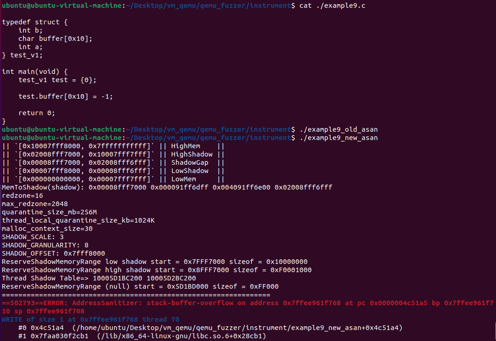
实战中ASAN会有哪些坑
libasan库缺失如何解决?
使用ASAN时有概率会出现下面的问题.
$ g++ -O -g -fsanitize=address heap-use-after-free.cpp
/usr/bin/ld: cannot find /usr/lib64/libasan.so.0.0.0
collect2: error: ld returned 1 exit status
这是因为在链接阶段没有找到libasan库,前文提到,ASAN的运行时函数是封装在Compiler-RT库中的.所以在正常的编译环境下它会在/usr/lib中出现.
fuzzing@fuzzing-virtual-machine:~/Desktop/test_code$ find /usr/ | grep libasan
/usr/share/doc/libasan5
/usr/share/doc/libasan6
/usr/lib/gcc/x86_64-linux-gnu/8/libasan_preinit.o
/usr/lib/gcc/x86_64-linux-gnu/8/libasan.a
/usr/lib/gcc/x86_64-linux-gnu/8/libasan.so
/usr/lib/gcc/x86_64-linux-gnu/10/libasan_preinit.o
/usr/lib/gcc/x86_64-linux-gnu/10/libasan.a
/usr/lib/gcc/x86_64-linux-gnu/10/libasan.so
/usr/lib/x86_64-linux-gnu/libasan.so.5
/usr/lib/x86_64-linux-gnu/libasan.so.6
/usr/lib/x86_64-linux-gnu/libasan.so.6.0.0
/usr/lib/x86_64-linux-gnu/libasan.so.5.0.0
找不到libasan库有两种解决方法:
- 联网环境下,使用
sudo apt install libasan即可安装. - 非联网环境下,找到LLVM Compiler-RT的源码下载编译并
make install即可.
模糊测试中遇到老旧不维护的库一直产生崩溃,怎么样让ASAN屏蔽对它的检测?
对于这类一直让ASAN产生崩溃但是不知道如何修复的代码,我们可以使用ASAN的黑名单来禁止对这些指定的函数插桩,甚至只对某几个特定的函数做插桩检测.详情参考官方文档 https://clang.llvm.org/docs/SanitizerSpecialCaseList.html
ASAN有哪些常用设置?
ASAN_OPTIONS
https://github.com/google/sanitizers/wiki/AddressSanitizerFlags
Shadow Table内存粒度有什么意义?
Shadow Table需要分配一块比较大的内存,用于对程序对的堆和栈做映射.这块内存能够映射的大小是有限的,所以就需要找到一种方式在尽可能少的内存里面保存更多的内存映射.举个例子:
FF FF FF FF 00 00 00 00 00 00 00 00 FF FF FF FF
这块内存数据表示占用8字节缓冲区进行投毒的内存布局.如果程序中大量使用这样的内存,那么很容易就把ASAN的Shadow Table占满,于是我们就有压缩Shadow Table的需求.压缩之后,Shadow Table的内存布局就变成了:
FF FF FF FF 00 FF FF FF FF
此时内存占用变小了一半.现在我们再回过来理解内存粒度的概念,未优化时的内存粒度为1,优化之后的内存粒度为8.先来看直观的例子:
int main(int argc,char** argv) {
char buffer[0x10] = {0};
buffer[0x10] = 'C';
return 1;
}
// 编译参数:clang -fsanitize=address ./test_asan_granularity.c -o ./test_asan_granularity
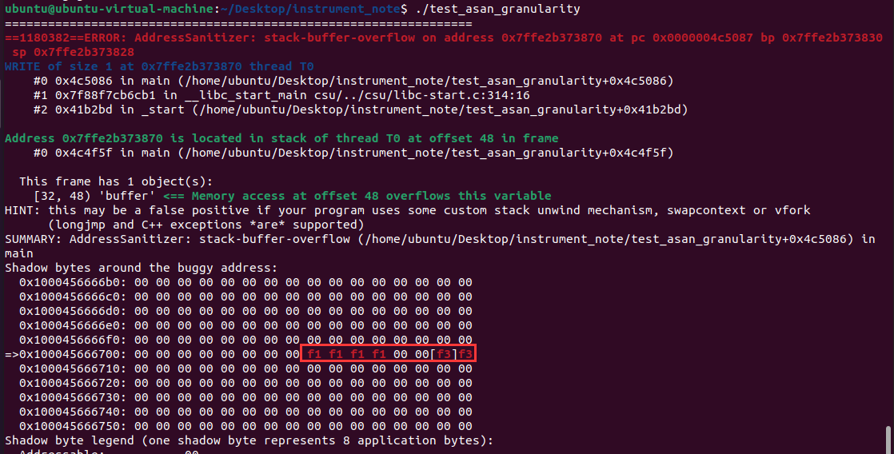
接下来尝试编译clang -fsanitize=address -mllvm -asan-mapping-scale=4 ./test_asan_granularity.c -o ./test_asan_granularity,ASAN的崩溃内容出现了异常.
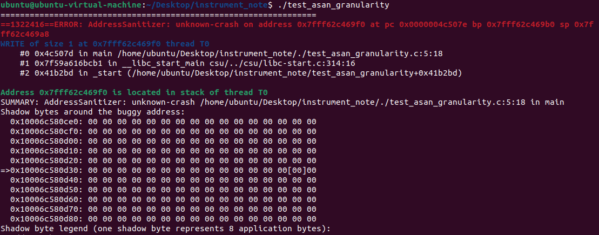
接下来再观察这个测试用例.因为内存粒度为8字节(为什么要取值为8字节压缩呢?笔者猜测应该是对齐x64平台的数据类型),此时buffer占用4字节,剩下4字节变量a也在Shadow Table压缩的这块内存里.ASAN的处理方法是在这一字节的Shadow Table内存中记录一个标记,标识这里可能会存在内存越界(只要Shadow Table的值不为0就认为是有异常的).
int main(int argc,char** argv) {
short buffer[2] = {0};
long a;
buffer[3] = 1024;
return 1;
}

现在我们就可以理解ASAN的这一行输出的意义了:
Shadow byte legend (one shadow byte represents 8 application bytes):
Addressable: 00
Partially addressable: 01 02 03 04 05 06 07 // <<<< 这里呀
Heap left redzone: fa
Freed heap region: fd
Stack left redzone: f1
Stack mid redzone: f2
Stack right redzone: f3
Stack after return: f5
Stack use after scope: f8
它的意思是,当前被压缩的内存中存在n字节其它变量占用的内存(n=1-7).
如何调试使用ASAN的程序?
一般地,ASAN崩溃有几种可能:
-
ASAN初始化时崩溃,可能是机器上内存不足导致.
-
全局对象初始化时崩溃,比如说C++全局声明的类对象,它会在程序初始化阶段(还记得init_array嘛,就是在这里插入了回调函数实例化全局对象)执行,也会存在内存问题.
-
运行时库异常,常见于Windows平台上.
-
创建栈时崩溃.
-
项目代码崩溃.
笔者在上一小节测试内存粒度时遇到了ASAN在函数初始化的阶段创建Shadow Table时直接崩溃了.
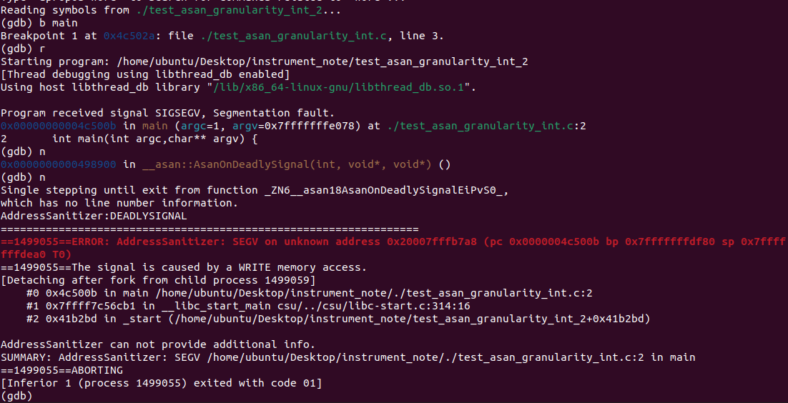
从输出我们可以知道,main函数的断点命中之后,接下来执行一次单步调试时就抛出ASAN的检测异常了,也就是说没有执行到用户在main函数中写的任何代码就崩溃了,那么产生崩溃肯定是在ASAN在创建Shadow Table初始化函数栈时触发的崩溃.我们把源程序反编译,查看0x4C500B的汇编.

对应的LLVM IR:
%21 = inttoptr i64 %20 to i64*
store i64 -1012762419733073423, i64* %21, align 1
原来是对Shadow Table进行投毒时触发了内存异常,导致程序异常崩溃了,知道原因之后就有思路再去寻找办法解决问题,像这样奇奇怪怪的问题还有很多,只能通过调试去找到问题的根源再解决.
那么如何调试一次由用户代码触发的崩溃呢?笔者的方法是:
-
根据ASAN栈崩溃信息定位到触发崩溃的代码,并分析漏洞原因是因为那些判断逻辑没有做好检验和关注变量内容.
-
根据猜想编写gdb脚本.
-
运行gdb观察值的变化.
举个例子,代码某个位置产生了越界访问,于是猜想是不是长度校验判断有问题,编写gdb脚本来监控这两个值的变化:
b func1
command
b 1031
command
print ">>>>"
print "Size="
print array_size
print "offset="
print offset
c
end
c
end
然后使用gdb命令执行gdb --command=./gdb_crash_analysis.gsh -arg ./fuzzer file ./crash,观察崩溃前对应的数值.
Breakpoint 2, func1 (this=0x7fffffffbae0, stream_0=0x7fffffffbb00, int_2=59852, int_3=1668261324, int_4=60, int_5=45056, int_6=1668246528, int_7=204,
class508_0=..., rangeList1_0=0x7fffffff7820, list_0=std::vector of length 2, capacity 2 = {...}, list_1=std::vector of length 2, capacity 2 = {...},
list_0_types=std::vector of length 2, capacity 2 = {...}) at Process.cpp
1468 arrays[j] = *(stream_0->begin() + Position + j);
$6 = ">>>>"
$7 = "Size="
$8 = 20
$9 = "offset="
$10 = 1668261324 // <<<< Overflow !
Program received signal SIGSEGV, Segmentation fault.
0x000000000060980e in func1 (this=0x7fffffffbae0, stream_0=0x7fffffffbb00, int_2=59852, int_3=1668261324, int_4=60, int_5=45056, int_6=1668246528,
int_7=204, class508_0=..., rangeList1_0=0x7fffffff7820, list_0=std::vector of length 2, capacity 2 = {...}, list_1=std::vector of length 2, capacity 2 = {...},
list_0_types=std::vector of length 2, capacity 2 = {...}) at Process.cpp
1468 arrays[j] = *(stream_0->begin() + Position + j); //// <<< Position = 1668261324
(gdb)
AddressSanitizer:DEADLYSIGNAL
=================================================================
==2995382==ERROR: AddressSanitizer: SEGV on unknown address 0x7ff2203d3dcc (pc 0x000000609846 bp 0x7ffc18159c50 sp 0x7ffc18157760 T0)
==2995382==The signal is caused by a READ memory access.
#0 0x609846 in func1(std::vector<unsigned char, std::allocator<unsigned char> >*, int, int, int, int, int, int, C508, RangeList*, std::vector<std::pair<std::__cxx11::basic_string<char, std::char_traits<char>, std::allocator<char> >, std::vector<std::__cxx11::basic_string<char, std::char_traits<char>, std::allocator<char> >, std::allocator<std::__cxx11::basic_string<char, std::char_traits<char>, std::allocator<char> > > > >, std::allocator<std::pair<std::__cxx11::basic_string<char, std::char_traits<char>, std::allocator<char> >, std::vector<std::__cxx11::basic_string<char, std::char_traits<char>, std::allocator<char> >, std::allocator<std::__cxx11::basic_string<char, std::char_traits<char>, std::allocator<char> > > > > > >&, std::vector<int, std::allocator<int> >&, std::vector<std::pair<std::__cxx11::basic_string<char, std::char_traits<char>, std::allocator<char> >, std::vector<std::__cxx11::basic_string<char, std::char_traits<char>, std::allocator<char> >, std::allocator<std::__cxx11::basic_string<char, std::char_traits<char>, std::allocator<char> > > > >, std::allocator<std::pair<std::__cxx11::basic_string<char, std::char_traits<char>, std::allocator<char> >, std::vector<std::__cxx11::basic_string<char, std::char_traits<char>, std::allocator<char> >, std::allocator<std::__cxx11::basic_string<char, std::char_traits<char>, std::allocator<char> > > > > > >&) Process.cpp
#1 0x6006e7 in func1(FileReaderHelp*, FileInfo, std::vector<unsigned char, std::allocator<unsigned char> >&, St*, Struct90) Process.cpp
# ....
#9 0x54c65b in main fuzz_main.cpp
#10 0x7ff1c3c26cb1 in __libc_start_main csu/../csu/libc-start.c:314:16
#11 0x411c0d in _start (v5+0x411c0d)
x64 ASAN为什么不兼容?
有时候在64位平台上使用ASAN编译会提示以下错误(参考链接:https://stackoverflow.com/questions/59007118/how-to-enable-address-sanitizer-at-godbolt-org/59010436#59010436):
==3==ERROR: AddressSanitizer failed to allocate 0xdfff0001000 (15392894357504) bytes at address 2008fff7000 (errno: 12)
==3==ReserveShadowMemoryRange failed while trying to map 0xdfff0001000 bytes. Perhaps you're using ulimit -v
在32位引入ASAN编译时,Shadow Table分配内存占用几百MB.但是使用64位ASAN编译时会占用20T内存,因为malloc分配这么大的内存失败,才提示了这个错误.解决方法一般有两个:1.直接限制内存分配大小,让malloc()成功分配;2.设置虚拟内存到交换分区.
ASAN官方的解决方法是使用ulimit命令来限制内存使用(参考引用:https://github.com/mirrorer/afl/blob/master/docs/notes_for_asan.txt),但是这个方式并不一定有效.所以我们可以使用虚拟内存映射到磁盘交互分区的方式再次尝试(参考引用:https://qastack.cn/unix/44985/limit-memory-usage-for-a-single-linux-process)
ASAN for Windows使用MSVC还是LLVM?
https://developercommunity.visualstudio.com/t/enabled-asan-address-sanitizer-for-x64-build-cause/1139763
https://devblogs.microsoft.com/cppblog/asan-for-windows-x64-and-debug-build-support/
https://docs.microsoft.com/en-us/cpp/build/reference/incremental-link-incrementally?view=msvc-160
https://github.com/microsoft/WSL/issues/121
主程序和动态链接库的ASAN兼容吗?
有空再写
参考引用
- Compile-time-instrumentation-flow-in-LLVM(https://www.researchgate.net/figure/Compile-time-instrumentation-flow-in-LLVM_fig1_262175489)
- LLVM Sanitizer-Coverage Document(https://clang.llvm.org/docs/SanitizerCoverage.html)
- LLVM Source-based Code Coverage(https://bcain-llvm.readthedocs.io/projects/clang/en/release_50/SourceBasedCodeCoverage/)
- libfuzzer-workshop(https://github.com/Dor1s/libfuzzer-workshop)
- LLVM AddressSanitizer Document(https://clang.llvm.org/docs/AddressSanitizer.html)
- AddressSanitizer Wiki(https://github.com/google/sanitizers/wiki/AddressSanitizer)
- llvm::MemIntrinsic Class Reference(https://llvm.org/doxygen/classllvm_1_1MemIntrinsic.html)
- llvm::IntrinsicInst Class Reference(https://llvm.org/doxygen/classllvm_1_1IntrinsicInst.html)
- LLVM llvm-lifetime-start-intrinsic(https://llvm.org/docs/LangRef.html#llvm-lifetime-start-intrinsic)
- llvm::AllocaInst Class Reference(https://llvm.org/doxygen/classllvm_1_1AllocaInst.html)
- llvm::IRBuilder Class Template Reference(https://llvm.org/doxygen/classllvm_1_1IRBuilder.html)
- C++全局构造和析构(https://www.jianshu.com/p/56ea6e9d00e9)
- CVE-2020-14364 QEMU逃逸 漏洞分析 (含完整EXP)(https://mp.weixin.qq.com/s/MQyczZXRfOsIQewNf7cfXw)
- libFuzzer Document(https://llvm.org/docs/LibFuzzer.html)
- libFuzzer Source by guidovranken(https://github.com/guidovranken/libfuzzer-gv)